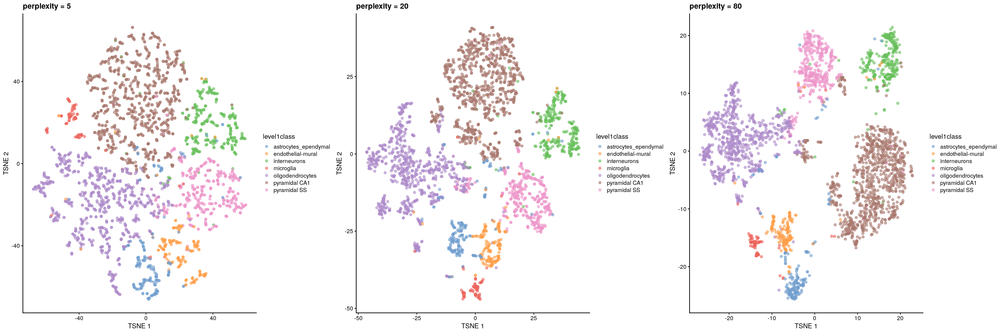

11 scRNA-seq data analysis overview
Instructor: Melissa Mayén Quiroz
Adapted from: OSCA: Basics of Single-Cell Analysis with Bioconductor
11.1 Single cell RNA sequencing
Single-cell RNA sequencing (scRNA-seq) is a cutting-edge technology used to analyze the gene expression profiles of individual cells. Unlike traditional bulk RNA sequencing, which provides an average expression profile of a population of cells, scRNA-seq allows researchers to study the gene expression patterns of single cells.
- Cell heterogeneity
- Cell type identification
- Cell state dynamics
Orchestrating Single-Cell Analysis with Bioconductor

Authors: Robert Amezquita [aut], Aaron Lun [aut], Stephanie Hicks [aut], Raphael Gottardo [aut], Alan O’Callaghan [cre]
11.1.1 Pre-processing of scRNA-seq Data (Before R)
- Quality Control of the reads (FastQC):
Assess the quality of raw sequencing reads. Check GC content, overrepresented sequences, presence of N bases, and other quality metrics.
- Alignment to Reference Transcriptome:
Align sequencing reads to a reference transcriptome. Generate aligned read files.
- Generation of Expression Count Matrix:
Quantify gene expression levels by counting the number of reads mapped to each gene. Create a matrix with genes as rows and cells as columns, where each entry represents the count of reads for a specific gene in a specific cell. For 10x Genomics data, the Cellranger software suite (Zheng et al. 2017) provides a custom pipeline to obtain a count matrix. This uses STAR to align reads to the reference genome and then counts the number of unique UMIs mapped to each gene.
11.1.2 Different Technologies
- Droplet-based: 10x Genomics, inDrop, Drop-seq
- Plate-based with unique molecular identifiers (UMIs): CEL-seq, MARS-seq
- Plate-based with reads: Smart-seq2
- Other: sci-RNA-seq, Seq-Well
In practical terms, droplet-based technologies are the current de facto standard due to their throughput and low cost per cell. Plate-based methods can capture other phenotypic information (e.g., morphology) and are more amenable to customization. Read-based methods provide whole-transcript coverage, which is useful in some applications (e.g., splicing, exome mutations); otherwise, UMI-based methods are more popular as they mitigate the effects of PCR amplification noise.
11.2 Basic Workflow
In the simplest case, the workflow has the following form:

We compute quality control metrics to remove low-quality cells that would interfere with downstream analyses. These cells may have been damaged during processing or may not have been fully captured by the sequencing protocol. Common metrics includes the total counts per cell, the proportion of spike-in or mitochondrial reads and the number of detected features.
We convert the counts into normalized expression values to eliminate cell-specific biases (e.g., in capture efficiency). This allows us to perform explicit comparisons across cells in downstream steps like clustering. We also apply a transformation, typically log, to adjust for the mean-variance relationship.
We perform feature selection to pick a subset of interesting features for downstream analysis. This is done by modelling the variance across cells for each gene and retaining genes that are highly variable. The aim is to reduce computational overhead and noise from uninteresting genes.
We apply dimensionality reduction to compact the data and further reduce noise. Principal components analysis is typically used to obtain an initial low-rank representation for more computational work, followed by more aggressive methods like
t-stochastic neighbor embedding for visualization purposes.We cluster cells into groups according to similarities in their (normalized) expression profiles. This aims to obtain groupings that serve as empirical proxies for distinct biological states. We typically interpret these groupings by identifying differentially expressed marker genes between clusters.
11.3 The SingleCellExperiment class
This object is specifically designed to store and analyze single-cell RNA sequencing (scRNA-seq) data. It extends the SummarizedExperiment class to include specialized features for single-cell data, such as cell identifiers, dimensionality reduction results, and methods for quality control and normalization.

Assay Data: The primary data matrix containing gene expression values or other measurements. Rows represent genes and columns represent cells.
colData(Column Metadata): Additional information about each cell, such as cell type, experimental condition, or any other relevant metadata.rowData(Row Metadata): Additional information about each gene, such as gene symbols, genomic coordinates, or functional annotations.reducedDims: Dimensionality reduction results, such as “principal component analysis” (PCA), “t-distributed stochastic neighbor embedding” (t-SNE), and “Uniform Manifold Approximation and Projection” (UMAP), used for visualizing and clustering cells.altExpNamesandaltExps: Names of alternative experiments (such as spike-in control genes used for normalization) and alternative experiment counts matrices.metadata: Additional metadata about the experiment.
11.3.1 Data Loading
The Lun et al. (2017) dataset contains two 96-well plates of 416B cells (an immortalized mouse myeloid progenitor cell line), processed using the Smart-seq2 protocol (Picelli et al. 2014). A constant amount of spike-in RNA from the External RNA Controls Consortium (ERCC) was also added to each cell’s lysate prior to library preparation.
library("scRNAseq")
library("SingleCellExperiment")
library("AnnotationHub")
library("scater")
## Load the data set
sce.416b <- LunSpikeInData(which = "416b")
#> downloading 1 resources
#> retrieving 1 resource
#> loading from cache
#> require("ensembldb")
## We convert the blocking factor to a factor so that downstream steps do not treat it as an integer.
sce.416b$block <- factor(sce.416b$block)
## rename the rows with the symbols, reverting to Ensembl identifiers
ens.mm.v97 <- AnnotationHub()[["AH73905"]]
#> loading from cacherowData(sce.416b)$ENSEMBL <- rownames(sce.416b)
rowData(sce.416b)$SYMBOL <- mapIds(ens.mm.v97,
keys = rownames(sce.416b),
keytype = "GENEID", column = "SYMBOL"
)
#> Warning: Unable to map 563 of 46604 requested IDs.11.3.2 Basics of your SCE
## Look at your SCE
sce.416b
#> class: SingleCellExperiment
#> dim: 46604 192
#> metadata(0):
#> assays(1): counts
#> rownames(46604): 4933401J01Rik Gm26206 ... CAAA01147332.1 CBFB-MYH11-mcherry
#> rowData names(4): Length ENSEMBL SYMBOL SEQNAME
#> colnames(192): SLX-9555.N701_S502.C89V9ANXX.s_1.r_1 SLX-9555.N701_S503.C89V9ANXX.s_1.r_1 ...
#> SLX-11312.N712_S508.H5H5YBBXX.s_8.r_1 SLX-11312.N712_S517.H5H5YBBXX.s_8.r_1
#> colData names(8): cell line cell type ... spike-in addition block
#> reducedDimNames(0):
#> mainExpName: endogenous
#> altExpNames(2): ERCC SIRV
## Get in the slot "assay", in the count matrix
## [genes, cells]
assay(sce.416b, "counts")[110:113, 1:2] # gene, cell
#> 4 x 2 sparse Matrix of class "dgCMatrix"
#> SLX-9555.N701_S502.C89V9ANXX.s_1.r_1 SLX-9555.N701_S503.C89V9ANXX.s_1.r_1
#> 1700034P13Rik . .
#> Sgk3 8 .
#> Gm6195 2 3
#> Gm22607 . .
## We can do it like this too
counts(sce.416b)[110:113, 1:2]
#> 4 x 2 sparse Matrix of class "dgCMatrix"
#> SLX-9555.N701_S502.C89V9ANXX.s_1.r_1 SLX-9555.N701_S503.C89V9ANXX.s_1.r_1
#> 1700034P13Rik . .
#> Sgk3 8 .
#> Gm6195 2 3
#> Gm22607 . .
## We could add more assays to our SCE
sce.416b <- logNormCounts(sce.416b)
sce.416b
#> class: SingleCellExperiment
#> dim: 46604 192
#> metadata(0):
#> assays(2): counts logcounts
#> rownames(46604): 4933401J01Rik Gm26206 ... CAAA01147332.1 CBFB-MYH11-mcherry
#> rowData names(4): Length ENSEMBL SYMBOL SEQNAME
#> colnames(192): SLX-9555.N701_S502.C89V9ANXX.s_1.r_1 SLX-9555.N701_S503.C89V9ANXX.s_1.r_1 ...
#> SLX-11312.N712_S508.H5H5YBBXX.s_8.r_1 SLX-11312.N712_S517.H5H5YBBXX.s_8.r_1
#> colData names(9): cell line cell type ... block sizeFactor
#> reducedDimNames(0):
#> mainExpName: endogenous
#> altExpNames(2): ERCC SIRV
## Acces to the column names (cell identifyers)
head(colnames(sce.416b))
#> [1] "SLX-9555.N701_S502.C89V9ANXX.s_1.r_1" "SLX-9555.N701_S503.C89V9ANXX.s_1.r_1" "SLX-9555.N701_S504.C89V9ANXX.s_1.r_1"
#> [4] "SLX-9555.N701_S505.C89V9ANXX.s_1.r_1" "SLX-9555.N701_S506.C89V9ANXX.s_1.r_1" "SLX-9555.N701_S507.C89V9ANXX.s_1.r_1"
## Acces to the column data (cell information)
head(colData(sce.416b))
#> DataFrame with 6 rows and 9 columns
#> cell line cell type single cell well quality genotype
#> <character> <character> <character> <character>
#> SLX-9555.N701_S502.C89V9ANXX.s_1.r_1 416B embryonic stem cell OK Doxycycline-inducibl..
#> SLX-9555.N701_S503.C89V9ANXX.s_1.r_1 416B embryonic stem cell OK Doxycycline-inducibl..
#> SLX-9555.N701_S504.C89V9ANXX.s_1.r_1 416B embryonic stem cell OK Doxycycline-inducibl..
#> SLX-9555.N701_S505.C89V9ANXX.s_1.r_1 416B embryonic stem cell OK Doxycycline-inducibl..
#> phenotype strain spike-in addition block sizeFactor
#> <character> <character> <character> <factor> <numeric>
#> SLX-9555.N701_S502.C89V9ANXX.s_1.r_1 wild type phenotype B6D2F1-J ERCC+SIRV 20160113 0.742741
#> SLX-9555.N701_S503.C89V9ANXX.s_1.r_1 wild type phenotype B6D2F1-J ERCC+SIRV 20160113 0.923157
#> SLX-9555.N701_S504.C89V9ANXX.s_1.r_1 wild type phenotype B6D2F1-J ERCC+SIRV 20160113 1.012242
#> SLX-9555.N701_S505.C89V9ANXX.s_1.r_1 induced CBFB-MYH11 o.. B6D2F1-J ERCC+SIRV 20160113 1.151585
#> [ reached getOption("max.print") -- omitted 2 rows ]
## Acces to the row names (gene names)
head(rownames(sce.416b))
#> [1] "4933401J01Rik" "Gm26206" "Xkr4" "Gm18956" "Gm37180" "Gm37363"
## Acces to the row data (gene information)
head(rowData(sce.416b))
#> DataFrame with 6 rows and 4 columns
#> Length ENSEMBL SYMBOL SEQNAME
#> <integer> <character> <character> <character>
#> 4933401J01Rik 1070 ENSMUSG00000102693 4933401J01Rik 1
#> Gm26206 110 ENSMUSG00000064842 Gm26206 1
#> Xkr4 6094 ENSMUSG00000051951 Xkr4 1
#> Gm18956 480 ENSMUSG00000102851 Gm18956 1
#> Gm37180 2819 ENSMUSG00000103377 Gm37180 1
#> Gm37363 2233 ENSMUSG00000104017 Gm37363 1
## We can create another SCE subsetitng the first one
sce_2 <- sce.416b[110:130, 1:2]
sce_2
#> class: SingleCellExperiment
#> dim: 21 2
#> metadata(0):
#> assays(2): counts logcounts
#> rownames(21): 1700034P13Rik Sgk3 ... Gm38005 Gm15604
#> rowData names(4): Length ENSEMBL SYMBOL SEQNAME
#> colnames(2): SLX-9555.N701_S502.C89V9ANXX.s_1.r_1 SLX-9555.N701_S503.C89V9ANXX.s_1.r_1
#> colData names(9): cell line cell type ... block sizeFactor
#> reducedDimNames(0):
#> mainExpName: endogenous
#> altExpNames(2): ERCC SIRVAs in the SummarizedExperiment, $ is the operator used to access a specific column within the cell metadata. That is, it’s a shortcut for colData(obj)$.
head(sce.416b$`cell type`)
#> [1] "embryonic stem cell" "embryonic stem cell" "embryonic stem cell" "embryonic stem cell" "embryonic stem cell"
#> [6] "embryonic stem cell"Now, we will look at the dimension reductions
## Compute PCA
sce_2 <- runPCA(sce_2)
#> Warning in check_numbers(k = k, nu = nu, nv = nv, limit = min(dim(x)) - : more singular values/vectors requested than
#> available
#> Warning in (function (A, nv = 5, nu = nv, maxit = 1000, work = nv + 7, reorth = TRUE, : You're computing too large a
#> percentage of total singular values, use a standard svd instead.11.4 Quality Control
Low-quality libraries in scRNA-seq data can arise from a variety of sources such as cell damage during dissociation or failure in library preparation (e.g., inefficient reverse transcription or PCR amplification). These usually manifest as “cells” with low total counts, few expressed genes and high mitochondrial or spike-in proportions. These low-quality libraries are problematic as they can contribute to misleading results in downstream analyses.
11.4.1 Common choices of QC metrics
For each cell, we calculate these QC metrics using the perCellQCMetrics() function from the scater package (McCarthy et al. 2017). The sum column contains the total count for each cell and the detected column contains the number of detected genes. The subsets_Mito_percent column contains the percentage of reads mapped to mitochondrial transcripts. Finally, the altexps_ERCC_percent column contains the percentage of reads mapped to ERCC transcripts.
library("scuttle")
## Identify mitochondrial genes (those with SEQNAME equal to "MT") in the row data
mito <- which(rowData(sce.416b)$SEQNAME == "MT")
## Compute per-cell QC metrics, including a subset for mitochondrial genes
stats <- perCellQCMetrics(sce.416b, subsets = list(Mt = mito))
summary(stats$sum) # total library sizes for all cells
#> Min. 1st Qu. Median Mean 3rd Qu. Max.
#> 27084 856350 1111252 1165865 1328301 4398883summary(stats$detected) # detected features (genes)
#> Min. 1st Qu. Median Mean 3rd Qu. Max.
#> 5609 7502 8341 8397 9208 11380summary(stats$subsets_Mt_percent) # percentage of reads mapping to mitochondrial genes
#> Min. 1st Qu. Median Mean 3rd Qu. Max.
#> 4.593 7.294 8.139 8.146 9.035 15.617summary(stats$altexps_ERCC_percent) # percentage of reads mapping to spike-in controls
#> Min. 1st Qu. Median Mean 3rd Qu. Max.
#> 2.242 4.291 6.031 6.412 8.126 19.429Alternatively, users may prefer to use the addPerCellQC() function. This computes and appends the per-cell QC statistics to the colData of the SingleCellExperiment object, allowing us to retain all relevant information in a single object for later manipulation.
## Compute addPerCellQCMetrics, including a subset for mitochondrial genes
sce.416b <- addPerCellQCMetrics(sce.416b, subsets = list(Mito = mito))
colnames(colData(sce.416b))
#> [1] "cell line" "cell type" "single cell well quality" "genotype"
#> [5] "phenotype" "strain" "spike-in addition" "block"
#> [9] "sizeFactor" "sum" "detected" "subsets_Mito_sum"
#> [13] "subsets_Mito_detected" "subsets_Mito_percent" "altexps_ERCC_sum" "altexps_ERCC_detected"
#> [17] "altexps_ERCC_percent" "altexps_SIRV_sum" "altexps_SIRV_detected" "altexps_SIRV_percent"
#> [21] "total"A key assumption here is that the QC metrics are independent of the biological state of each cell. Poor values (e.g., low library sizes, high mitochondrial proportions) are presumed to be driven by technical factors rather than biological processes, meaning that the subsequent removal of cells will not misrepresent the biology in downstream analyses.
11.4.2 Identifying low-quality cells
11.4.2.1 With fixed thresholds
The simplest approach to identifying low-quality cells involves applying fixed thresholds to the QC metrics. For example, we might consider cells to be low quality if they have library sizes below 100,000 reads; express fewer than 5,000 genes; have spike-in proportions above 10%; or have mitochondrial proportions above 10%.
## Using our previous perCellQCMetrics data:
## Identify cells with a total library size (sum of counts) less than 100,000
c.lib <- stats$sum < 1e5
## Identify cells with fewer than 5,000 detected features (genes)
qc.nexprs <- stats$detected < 5e3
## Identify cells with more than 10% of reads mapping to spike-in controls (e.g., ERCC)
qc.spike <- stats$altexps_ERCC_percent > 10
## Identify cells with more than 10% of reads mapping to mitochondrial genes
qc.mito <- stats$subsets_Mt_percent > 10
## Create a combined logical vector that marks cells to discard if they meet any of the above criteria
discard <- c.lib | qc.nexprs | qc.spike | qc.mito
## Summarize the number of cells removed for each reason.
DataFrame(
LibSize = sum(c.lib), # Number of cells removed due to low library size
NExprs = sum(qc.nexprs), # Number of cells removed due to low number of detected features
SpikeProp = sum(qc.spike), # Number of cells removed due to high spike-in proportion
MitoProp = sum(qc.mito), # Number of cells removed due to high mitochondrial proportion
Total = sum(discard) # Total number of cells removed
)
#> DataFrame with 1 row and 5 columns
#> LibSize NExprs SpikeProp MitoProp Total
#> <integer> <integer> <integer> <integer> <integer>
#> 1 3 0 19 14 33While simple, this strategy requires considerable experience to determine appropriate thresholds for each experimental protocol and biological system. Thresholds for read count-based data are not applicable for UMI-based data, and vice versa. Differences in mitochondrial activity or total RNA content require constant adjustment of the mitochondrial and spike-in thresholds, respectively, for different biological systems. Indeed, even with the same protocol and system, the appropriate threshold can vary from run to run due to the vagaries of cDNA capture efficiency and sequencing depth per cell.
11.4.2.2 With adaptive threshold
Here, we assume that most of the dataset consists of high-quality cells. We then identify cells that are outliers for the various QC metrics, based on the median absolute deviation (MAD) from the median value of each metric across all cells.
By default, we consider a value to be an outlier if it is more than 3 MADs from the median in the “problematic” direction.
We can do that using the perCellQCFilters() function. It will allow to identify cells with log-transformed library sizes that are more than 3 MADs below the median. A log-transformation is used to improve resolution at small values when type = "lower" and to avoid negative thresholds that would be meaningless for a non-negative metric.
perCellQCFilters() will also identify outliers for the proportion-based metrics specified in the sub.fields= arguments. These distributions frequently exhibit a heavy right tail, but unlike the two previous metrics, it is the right tail itself that contains the putative low-quality cells. Thus, we do not perform any transformation to shrink the tail - rather, our hope is that the cells in the tail are identified as large outliers.
A cell that is an outlier for any of these metrics is considered to be of low quality and discarded. This is captured in the discard column, which can be used for later filtering
## Identify cells that are outlier
reasons <- perCellQCFilters(stats,
sub.fields = c("subsets_Mt_percent", "altexps_ERCC_percent")
) # No transformation
colSums(as.matrix(reasons))
#> low_lib_size low_n_features high_subsets_Mt_percent high_altexps_ERCC_percent
#> 4 0 2 1
#> discard
#> 6
## Extract the exact filter thresholds
attr(reasons$low_lib_size, "thresholds")
#> lower higher
#> 434082.9 InfWith this strategy, the thresholds adapt to both the location and spread of the distribution of values for a given metric. This allows the QC procedure to adjust to changes in sequencing depth, cDNA capture efficiency, mitochondrial content, etc. without requiring any user intervention or prior experience. However, the underlying assumption of a high-quality majority may not always be appropriate
11.4.3 Checking diagnostic plots
It is good practice to inspect the distributions of QC metrics to identify possible problems. In the most ideal case, we would see normal distributions that would justify the 3 MAD threshold used in outlier detection. A large proportion of cells in another mode suggests that the QC metrics might be correlated with some biological state, potentially leading to the loss of distinct cell types during filtering; or that there were inconsistencies with library preparation for a subset of cells, a not-uncommon phenomenon in plate-based protocols.
library("scater")
## Add the information to the SCE columns
colData(sce.416b) <- cbind(colData(sce.416b), stats)
sce.416b$block <- factor(sce.416b$block)
sce.416b$phenotype <- ifelse(grepl("induced", sce.416b$phenotype), "induced", "wild type")
sce.416b$discard <- reasons$discard
## Plot
gridExtra::grid.arrange(
## Diccard low total counts
plotColData(sce.416b,
x = "block", y = "sum", colour_by = "discard",
other_fields = "phenotype"
) + facet_wrap(~phenotype) +
scale_y_log10() + ggtitle("Total count"),
## Discard low detected genes
plotColData(sce.416b,
x = "block", y = "detected", colour_by = "discard",
other_fields = "phenotype"
) + facet_wrap(~phenotype) +
scale_y_log10() + ggtitle("Detected features"),
## Discard high mitocondrial percentage
plotColData(sce.416b,
x = "block", y = "subsets_Mito_percent",
colour_by = "discard", other_fields = "phenotype"
) +
facet_wrap(~phenotype) + ggtitle("Mito percent"),
## Discard high
plotColData(sce.416b,
x = "block", y = "altexps_ERCC_percent",
colour_by = "discard", other_fields = "phenotype"
) +
facet_wrap(~phenotype) + ggtitle("ERCC percent"),
ncol = 1
)You can also create some plots via iSEE :)
Optional: Create at least 1 QC plot using iSEE. Clue: Use the Column Data Plot 1 panel
11.4.4 Removing low-quality cells
Once low-quality cells have been identified, we can choose to either remove them or mark them. Removal is the most straightforward option and is achieved by subsetting the SingleCellExperiment by column. In this case, we use the previous low-quality calls to generate a subsetted SingleCellExperiment that we would use for downstream analyses.
Other option is to simply mark the low-quality cells as such and retain them in the downstream analysis.
11.5 Normalization
Systematic differences in sequencing coverage between libraries are often observed in single-cell RNA sequencing data which typically arise from technical differences in cDNA capture or PCR amplification efficiency across cells, attributable to the difficulty of achieving consistent library preparation. Normalization aims to remove these differences such that they do not interfere with comparisons of the expression profiles between cells. This will ensure that any observed heterogeneity or differential expression within the cell population are driven by biology and not technical biases.
Let´s load before another dataset and review quickly what we have learned.
library("scRNAseq")
library("scater")
## Load dataset
sce.zeisel <- ZeiselBrainData()
sce.zeisel <- aggregateAcrossFeatures(sce.zeisel,
ids = sub("_loc[0-9]+$", "", rownames(sce.zeisel))
)
## Compute perCellQCMetrics
stats <- perCellQCMetrics(sce.zeisel, subsets = list(
Mt = rowData(sce.zeisel)$featureType == "mito"
))
## Compute quickPerCellQC
qc <- quickPerCellQC(stats, percent_subsets = c(
"altexps_ERCC_percent",
"subsets_Mt_percent"
))
## Discard low quality cells
sce.zeisel <- sce.zeisel[, !qc$discard]Scaling normalization
Scaling normalization is the simplest and most commonly used class of normalization strategies. This involves dividing all counts for each cell by a cell-specific scaling factor, often called a “size factor” (Anders and Huber 2010). The assumption here is that any cell-specific bias (e.g., in capture or amplification efficiency) affects all genes equally via scaling of the expected mean count for that cell. The size factor for each cell represents the estimate of the relative bias in that cell, so division of its counts by its size factor should remove that bias.
11.5.1 Library size normalization
Library size normalization is the simplest strategy for performing scaling normalization. We define the library size as the total sum of counts across all genes for each cell, the expected value of which is assumed to scale with any cell-specific biases. The “library size factor” for each cell is then directly proportional to its library size where the proportionality constant is defined such that the mean size factor across all cells is equal to 1. This definition ensures that the normalized expression values are on the same scale as the original counts, which is useful for interpretation (especially when dealing with transformed data).
library("scater")
## Compute librarySizeFactors
lib.sf.zeisel <- librarySizeFactors(sce.zeisel)
summary(lib.sf.zeisel)
#> Min. 1st Qu. Median Mean 3rd Qu. Max.
#> 0.1757 0.5680 0.8680 1.0000 1.2783 4.0839In the Zeisel brain data, the library size factors differ by up to 10-fold across cells. This is typical of the variability in coverage in scRNA-seq data.
## Plot the library size factors differences
hist(log10(lib.sf.zeisel), xlab = "Log10[Size factor]", col = "grey80")
Strictly speaking, the use of library size factors assumes that there is no “imbalance” in the differentially expressed (DE) genes between any pair of cells.
Although, in practice, normalization accuracy is not a major consideration for exploratory scRNA-seq data analyses. Composition biases do not usually affect the separation of clusters, only the magnitude - and to a lesser extent, direction - of the log-fold changes between clusters or cell types
11.5.2 Normalization by deconvolution
composition biases will be present when any unbalanced differential expression exists between samples. Consider the simple example of two cells where a single gene “X” is upregulated in one cell “A” compared to the other cell “B”. This upregulation means that either more sequencing resources are devoted to “X in”A”, thus decreasing coverage of all other non-DE genes when the total library size of each cell is experimentally fixed; or the library size of “A” increases when “X” is assigned more reads or UMIs.
The removal of composition biases is a well-studied problem for bulk RNA sequencing data analysis.
- estimateSizeFactorsFromMatrix() function in the DESeq2 package (Anders and Huber 2010; Love, Huber, and Anders 2014)
- calcNormFactors()function in the edgeR package (Robinson and Oshlack 2010).
Single-cell data can be problematic for these bulk normalization methods due to the dominance of low and zero counts. To overcome this, we pool counts from many cells to increase the size of the counts for accurate size factor estimation (Lun, Bach, and Marioni 2016). Pool-based size factors are then “deconvolved” into cell-based factors for normalization of each cell’s expression profile. This is performed using the calculateSumFactors() function from scran.
First we have a pre-clustering step with quickCluster() where cells in each cluster are normalized separately and the size factors are rescaled to be comparable across clusters. This avoids the assumption that most genes are non-DE across the entire population - only a non-DE majority is required between pairs of clusters, which is a weaker assumption for highly heterogeneous populations.
11.5.3 Normalization by spike-ins
Spike-in normalization is based on the assumption that the same amount of spike-in RNA was added to each cell, so, systematic differences in the coverage of the spike-in transcripts can only be due to cell-specific biases, e.g., in capture efficiency or sequencing depth. To remove these biases, we equalize spike-in coverage across cells by scaling with “spike-in size factors”.
Compared to the previous methods, spike-in normalization requires no assumption about the biology of the system. Practically, spike-in normalization should be used if differences in the total RNA content of individual cells are of interest and must be preserved in downstream analyses.
To demonstrate the use of spike-in normalization on a different dataset involving T cell activation after stimulation with T cell receptor ligands of varying affinity (Richard et al. 2018).
sce.richard <- sce.richard[, sce.richard$`single cell quality` == "OK"]
sce.richard
#> class: SingleCellExperiment
#> dim: 46603 528
#> metadata(0):
#> assays(1): counts
#> rownames(46603): ENSMUSG00000102693 ENSMUSG00000064842 ... ENSMUSG00000096730 ENSMUSG00000095742
#> rowData names(0):
#> colnames(528): SLX-12611.N701_S502. SLX-12611.N702_S502. ... SLX-12612.i712_i522. SLX-12612.i714_i522.
#> colData names(13): age individual ... stimulus time
#> reducedDimNames(0):
#> mainExpName: endogenous
#> altExpNames(1): ERCCWe apply the computeSpikeFactors() method to estimate spike-in size factors for all cells. This is defined by converting the total spike-in count per cell into a size factor, using the same reasoning as in librarySizeFactors().
(Scaling will subsequently remove any differences in spike-in coverage across cells).
11.5.4 Scaling and log-transforming
Once we have computed the size factors, we use the logNormCounts() function from scater to compute normalized expression values for each cell. This is done by dividing the count for each gene/spike-in transcript with the appropriate size factor for that cell. The function also log-transforms the normalized values, creating a new assay called "logcounts". (Technically, these are “log-transformed normalized expression values”).
## Compute normalized expression values and log-transformation
sce.zeisel <- logNormCounts(sce.zeisel)
assayNames(sce.zeisel)
#> [1] "counts" "logcounts"The log-transformation is useful as differences in the log-values represent log-fold changes in expression.
By operating on log-transformed data, we ensure that these procedures are measuring distances between cells based on log-fold changes in expression. Log-transformation focuses on the former by promoting contributions from genes with strong relative differences.
11.6 Feature selection
highly variable genes (HVGs)
We often use scRNA-seq data in exploratory analyses to characterize heterogeneity across cells. Procedures like clustering and dimensionality reduction compare cells based on their gene expression profiles, which involves aggregating per-gene differences into a single (dis)similarity metric between a pair of cells. The choice of genes to use in this calculation has a major impact on the behavior of the metric and the performance of downstream methods. We want to select genes that contain useful information about the biology of the system while removing genes that contain random noise. This aims to preserve interesting biological structure without the variance that obscures that structure, and to reduce the size of the data to improve computational efficiency of later steps.
The simplest approach to feature selection is to select the most variable genes based on their expression across the population. This assumes that genuine biological differences will manifest as increased variation in the affected genes, compared to other genes that are only affected by technical noise or a baseline level of “uninteresting” biological variation.
11.6.1 Quantifying per-gene variation
The simplest approach to quantifying per-gene variation is to compute the variance of the log-normalized expression values (“log-counts”) for each gene across all cells (A. T. L. Lun, McCarthy, and Marioni 2016). The advantage of this approach is that the feature selection is based on the same log-values that are used for later downstream steps. In particular, genes with the largest variances in log-values will contribute most to the Euclidean distances between cells during procedures like clustering and dimensionality reduction. By using log-values here, we ensure that our quantitative definition of heterogeneity is consistent throughout the entire analysis.
Calculation of the per-gene variance is simple, but feature selection requires modelling of the mean-variance relationship. The log-transformation is not a variance stabilizing transformation in most cases, which means that the total variance of a gene is driven more by its abundance than its underlying biological heterogeneity. To account for this effect, we use the modelGeneVar() function to fit a trend to the variance with respect to abundance across all genes (Figure 3.1).
library("scran")
## Model the mean-variance relationship
dec.zeisel <- modelGeneVar(sce.zeisel)
## Plot the fit
fit.zeisel <- metadata(dec.zeisel)
plot(fit.zeisel$mean, fit.zeisel$var,
xlab = "Mean of log-expression",
ylab = "Variance of log-expression"
)
curve(fit.zeisel$trend(x), col = "dodgerblue", add = TRUE, lwd = 2)At any given abundance, we assume that the variation in expression for most genes is driven by uninteresting processes like sampling noise. Under this assumption, the fitted value of the trend at any given gene’s abundance represents an estimate of its uninteresting variation, which we call the technical component. We then define the biological component for each gene as the difference between its total variance and the technical component. This biological component represents the “interesting” variation for each gene and can be used as the metric for HVG selection.
## Order by most interesting genes for inspection
dec.zeisel[order(dec.zeisel$bio, decreasing = TRUE), ]
#> DataFrame with 19839 rows and 6 columns
#> mean total tech bio p.value FDR
#> <numeric> <numeric> <numeric> <numeric> <numeric> <numeric>
#> Plp1 3.86637 15.44422 1.52686 13.91736 0.00000e+00 0.00000e+00
#> Trf 2.27790 9.95350 1.42611 8.52739 7.65644e-200 7.59060e-196
#> Mal 2.30761 9.19548 1.42963 7.76586 2.43043e-165 1.60635e-161
#> Apod 1.89630 7.78119 1.36339 6.41780 9.80407e-125 4.85988e-121
#> Mog 1.84701 7.30188 1.35204 5.94985 2.65362e-109 8.76934e-106
#> ... ... ... ... ... ... ...
#> Ddx5 3.71905 0.762844 1.54756 -0.784711 0.994702 0.997822
#> [ reached getOption("max.print") -- omitted 4 rows ]11.6.2 Quantifying technical noise (spike-ins)
The assumptions made by quantifying per-gene variation may be problematic in rare scenarios where many genes at a particular abundance are affected by a biological process. For example, strong upregulation of cell type-specific genes may result in an enrichment of HVGs at high abundances. This would inflate the fitted trend in that abundance interval and compromise the detection of the relevant genes.
We can avoid this problem by fitting a mean-dependent trend to the variance of the spike-in transcripts, if they are available. The premise here is that spike-ins should not be affected by biological variation, so the fitted value of the spike-in trend should represent a better estimate of the technical component for each gene.
## Fit a mean-dependent trend to the variance of the spike-in transcripts
dec.spike.416b <- modelGeneVarWithSpikes(sce.416b, "ERCC")
## Order by most interesting genes for inspection
dec.spike.416b[order(dec.spike.416b$bio, decreasing = TRUE), ]
#> DataFrame with 46604 rows and 6 columns
#> mean total tech bio p.value FDR
#> <numeric> <numeric> <numeric> <numeric> <numeric> <numeric>
#> Lyz2 6.53871 13.5804 1.61389 11.9665 3.42011e-189 2.91162e-186
#> Top2a 5.78145 14.2104 2.56868 11.6418 4.26367e-72 1.20992e-69
#> Ccnb2 5.89731 13.6178 2.39162 11.2262 3.53970e-77 1.09579e-74
#> Ccl9 6.70039 12.4793 1.44789 11.0314 1.27204e-199 1.26341e-196
#> Hbb-bt 4.95051 15.0336 4.02525 11.0083 1.50804e-27 1.03594e-25
#> ... ... ... ... ... ... ...
#> Rpl5-ps2 3.50523 0.831793 6.43592 -5.60413 0.999712 0.999857
#> [ reached getOption("max.print") -- omitted 4 rows ]
## Plot the fit
plot(dec.spike.416b$mean, dec.spike.416b$total,
xlab = "Mean of log-expression",
ylab = "Variance of log-expression"
)
fit.spike.416b <- metadata(dec.spike.416b)
points(fit.spike.416b$mean, fit.spike.416b$var, col = "red", pch = 16)
curve(fit.spike.416b$trend(x), col = "dodgerblue", add = TRUE, lwd = 2)11.6.3 Quantifying technical noise (mean-variance trend)
In the absence of spike-in data, one can attempt to create a trend by making some distributional assumptions about the noise. For example, UMI counts typically exhibit near-Poisson variation if we only consider technical noise from library preparation and sequencing. This can be used to construct a mean-variance trend in the log-counts with the modelGeneVarByPoisson() function.
## construct a mean-variance trend in the log-counts
set.seed(0010101)
dec.pois.zeisel <- modelGeneVarByPoisson(sce.zeisel)
## Order by most interesting genes for inspection
dec.pois.zeisel <- dec.pois.zeisel[order(dec.pois.zeisel$bio, decreasing = TRUE), ]
head(dec.pois.zeisel)
#> DataFrame with 6 rows and 6 columns
#> mean total tech bio p.value FDR
#> <numeric> <numeric> <numeric> <numeric> <numeric> <numeric>
#> Plp1 3.86637 15.44422 0.226375 15.21785 0 0
#> Trf 2.27790 9.95350 0.635655 9.31785 0 0
#> Mal 2.30761 9.19548 0.626251 8.56923 0 0
#> Apod 1.89630 7.78119 0.748055 7.03313 0 0
#> Mog 1.84701 7.30188 0.760426 6.54146 0 0
#> Mbp 2.20638 6.74997 0.658112 6.09186 0 0
## Plot the fit
plot(dec.pois.zeisel$mean, dec.pois.zeisel$total,
pch = 16, xlab = "Mean of log-expression",
ylab = "Variance of log-expression"
)
curve(metadata(dec.pois.zeisel)$trend(x), col = "dodgerblue", add = TRUE)Trends based purely on technical noise tend to yield large biological components for highly-expressed genes. This often includes so-called “house-keeping” genes coding for essential cellular components such as ribosomal proteins, which are considered uninteresting for characterizing cellular heterogeneity. These observations suggest that a more accurate noise model does not necessarily yield a better ranking of HVGs. Though, one should keep an open mind that house-keeping genes are regularly DE in a variety of conditions
11.6.4 Handling batch effects
Data containing multiple batches will often exhibit batch effects. We are usually not interested in HVGs that are driven by batch effects; instead, we want to focus on genes that are highly variable within each batch.
This is naturally achieved by performing trend fitting and variance decomposition separately for each batch.
We will try now this approach by treating each plate (block) in the 416B dataset as a different batch, using the modelGeneVarWithSpikes() function. (The same argument is available in all other variance-modelling functions.)
## Fit a mean-dependent trend to the variance of the spike-in transcripts
## Independently for each batch (block)
dec.block.416b <- modelGeneVarWithSpikes(sce.416b, "ERCC", block = sce.416b$block) # block=sce.416b$block
head(dec.block.416b[order(dec.block.416b$bio, decreasing = TRUE), 1:6])
#> DataFrame with 6 rows and 6 columns
#> mean total tech bio p.value FDR
#> <numeric> <numeric> <numeric> <numeric> <numeric> <numeric>
#> Lyz2 6.53871 13.5779 1.63259 11.9453 0.00000e+00 0.00000e+00
#> Top2a 5.78145 13.9852 2.77254 11.2126 6.95319e-238 2.07179e-235
#> Ccl9 6.70039 12.5449 1.40416 11.1408 0.00000e+00 0.00000e+00
#> Hbb-bt 4.95051 15.0506 4.07362 10.9770 7.34341e-90 5.66488e-88
#> Ccnb2 5.89731 13.3673 2.60730 10.7600 1.02751e-282 3.88775e-280
#> Cd200r3 4.81056 14.9435 4.31950 10.6240 8.48013e-76 5.20981e-74
## Plot the fit by batch (block)
par(mfrow = c(1, 2))
blocked.stats <- dec.block.416b$per.block
for (i in colnames(blocked.stats)) {
current <- blocked.stats[[i]]
plot(current$mean, current$total,
main = i, pch = 16, cex = 0.5,
xlab = "Mean of log-expression", ylab = "Variance of log-expression"
)
curfit <- metadata(current)
points(curfit$mean, curfit$var, col = "red", pch = 16)
curve(curfit$trend(x), col = "dodgerblue", add = TRUE, lwd = 2)
}The use of a batch-specific trend fit is useful as it accommodates differences in the mean-variance trends between batches. This is especially important if batches exhibit systematic technical differences, e.g., differences in coverage or in the amount of spike-in RNA added.
11.6.5 Selecting highly variable genes
Once we have quantified the per-gene variation, the next step is to select the subset of HVGs to use in downstream analyses. A larger subset will reduce the risk of discarding interesting biological signal by retaining more potentially relevant genes, at the cost of increasing noise from irrelevant genes that might obscure said signal. It is difficult to determine the optimal trade-off for any given application as noise in one context may be useful signal in another.
The most obvious selection strategy is to take the top “n” genes with the largest values for the relevant variance metric. The main advantage of this approach is that the user can directly control the number of genes retained, which ensures that the computational complexity of downstream calculations is easily predicted. For modelGeneVar() and modelGeneVarWithSpikes(), we would select the genes with the largest biological components.
This is conveniently done for us via getTopHVgs(), as shown with n = 1000.
## Top 1000 genes
hvg.zeisel.var <- getTopHVGs(dec.zeisel, n = 1000)
str(hvg.zeisel.var)
#> chr [1:1000] "Plp1" "Trf" "Mal" "Apod" "Mog" "Mbp" "Car2" "Cnp" "Ugt8a" "Enpp2" "Meg3" "Mobp" "Ermn" "Ptgds" ...The choice of “n” also has a fairly straightforward biological interpretation. The main disadvantage of this approach that it turns HVG selection into a competition between genes, whereby a subset of very highly variable genes can push other informative genes out of the top set. This can be problematic for analyses of highly heterogeneous populations if the loss of important markers prevents the resolution of certain subpopulations.
11.7 Dimensionality reduction
Many scRNA-seq analysis procedures involve comparing cells based on their expression values across multiple genes. For example, clustering aims to identify cells with similar transcriptomic profiles by computing Euclidean distances across genes. In these applications, each individual gene represents a dimension of the data.
As the name suggests, dimensionality reduction aims to reduce the number of separate dimensions in the data. This is possible because different genes are correlated if they are affected by the same biological process. Thus, we do not need to store separate information for individual genes, but can instead compress multiple features into a single dimension, e.g., an “eigengene” (Langfelder and Horvath 2007). This reduces computational work in downstream analyses like clustering, as calculations only need to be performed for a few dimensions rather than thousands of genes; reduces noise by averaging across multiple genes to obtain a more precise representation of the patterns in the data; and enables effective plotting of the data, for those of us who are not capable of visualizing more than 3 dimensions.
11.7.1 Principal components analysis
Principal components analysis (PCA) discovers axes in high-dimensional space that capture the largest amount of variation. This is best understood by imagining each axis as a line. Say we draw a line anywhere, and we move each cell in our data set onto the closest position on the line. The variance captured by this axis is defined as the variance in the positions of cells along that line.

In PCA, the first axis (or “principal component”, PC) is chosen such that it maximizes this variance. The next PC is chosen such that it is orthogonal to the first and captures the greatest remaining amount of variation, and so on.
By definition, the top PCs capture the dominant factors of heterogeneity in the data set. In the context of scRNA-seq, our assumption is that biological processes affect multiple genes in a coordinated manner. This means that the earlier PCs are likely to represent biological structure as more variation can be captured by considering the correlated behavior of many genes. By comparison, random technical or biological noise is expected to affect each gene independently. There is unlikely to be an axis that can capture random variation across many genes, meaning that noise should mostly be concentrated in the later PCs. This motivates the use of the earlier PCs in our downstream analyses, which concentrates the biological signal to simultaneously reduce computational work and remove noise.

We can perform PCA on the log-normalized expression values using the fixedPCA() function from scran. By default, fixedPCA() will compute the first 50 PCs and store them in the reducedDims() of the output SingleCellExperiment object, as shown below.
Here, we use only the top 2000 genes with the largest biological components to reduce both computational work and high-dimensional random noise. In particular, while PCA is robust to random noise, an excess of it may cause the earlier PCs to capture noise instead of biological structure (Johnstone and Lu 2009).
11.7.2 Choosing the number of PCs
How many of the top PCs should we retain for downstream analyses? The choice of the number of PCs is an analogous decision to the choice of the number of HVGs to use. Using more PCs will retain more biological signal at the cost of including more noise that might mask said signal. On the other hand, using fewer PCs will introduce competition between different factors of variation, where weaker (but still interesting) factors may be pushed down into lower PCs and inadvertently discarded from downstream analyses.
It is hard to determine whether an “optimal” choice exists for the number of PCs. Certainly, we could attempt to remove the technical variation that is almost always uninteresting. However, even if we were only left with biological variation, there is no straightforward way to automatically determine which aspects of this variation are relevant.
Most practitioners will simply set to a “reasonable” but arbitrary value, typically ranging from 10 to 50. This is satisfactory depending of the amount of variance explained by that certain number of PCs.
11.7.3 Visualizing the PCs
Algorithms are more than happy to operate on 10-50 PCs, but these are still too many dimensions for human comprehension. To visualize the data, the most common and easy way is to use the top 2 PCs for plotting.
library("scater")
## Plot PCA (Top 2 PCs for 2 dimentional visualization)
plotReducedDim(sce.zeisel, dimred = "PCA", colour_by = "level1class")The problem is that PCA is a linear technique, i.e., only variation along a line in high-dimensional space is captured by each PC. As such, it cannot efficiently pack differences in d dimensions into the first 2 PCs.
One workaround is to plot several of the top PCs against each other in pairwise plots. However, it is difficult to interpret multiple plots simultaneously, and even this approach is not sufficient to separate some of the annotated subpopulations.
11.7.4 Non-linear methods for visualization
11.7.4.1 t-stochastic neighbor embedding
The de facto standard for visualization of scRNA-seq data is the t-stochastic neighbor embedding (TSNE) method (Van der Maaten and Hinton 2008). This attempts to find a low-dimensional representation of the data that preserves the distances between each point and its neighbors in the high-dimensional space. Unlike PCA, it is not restricted to linear transformations, nor is it obliged to accurately represent distances between distant populations. This means that it has much more freedom in how it arranges cells in low-dimensional space, enabling it to separate many distinct clusters in a complex population
## TSNE using runTSNE() stores the t-SNE coordinates in the reducedDims
set.seed(100)
sce.zeisel <- runTSNE(sce.zeisel, dimred = "PCA")
## Plot TSNE
plotReducedDim(sce.zeisel, dimred = "TSNE", colour_by = "level1class")The “perplexity” is another important parameter that determines the granularity of the visualization. Low perplexities will favor resolution of finer structure, possibly to the point that the visualization is compromised by random noise. Thus, it is advisable to test different perplexity values to ensure that the choice of perplexity does not drive the interpretation of the plot.
## run TSNE using diferent perplexity numbers and plot
## TSNE using perplexity = 5
set.seed(100)
sce.zeisel <- runTSNE(sce.zeisel, dimred = "PCA", perplexity = 5)
out5 <- plotReducedDim(sce.zeisel,
dimred = "TSNE",
colour_by = "level1class"
) + ggtitle("perplexity = 5")
## TSNE using perplexity = 20
set.seed(100)
sce.zeisel <- runTSNE(sce.zeisel, dimred = "PCA", perplexity = 20)
out20 <- plotReducedDim(sce.zeisel,
dimred = "TSNE",
colour_by = "level1class"
) + ggtitle("perplexity = 20")
## TSNE using perplexity = 80
set.seed(100)
sce.zeisel <- runTSNE(sce.zeisel, dimred = "PCA", perplexity = 80)
out80 <- plotReducedDim(sce.zeisel,
dimred = "TSNE",
colour_by = "level1class"
) + ggtitle("perplexity = 80")
## Combine plots
gridExtra::grid.arrange(out5, out20, out80, ncol = 3)
11.7.4.2 Uniform manifold approximation and projection
The uniform manifold approximation and projection (UMAP) method (McInnes, Healy, and Melville 2018) is an alternative to TSNE for non-linear dimensionality reduction. It is roughly similar to tSNE in that it also tries to find a low-dimensional representation that preserves relationships between neighbors in high-dimensional space. However, the two methods are based on different theory, represented by differences in the various graph weighting equations. This manifests as a different visualization.
## UMAP using runUMAP() stores the coordinates in the reducedDims
set.seed(100)
sce.zeisel <- runUMAP(sce.zeisel, dimred = "PCA")
## Plot UMAP
plotReducedDim(sce.zeisel, dimred = "UMAP", colour_by = "level1class")Compared to tSNE, the UMAP visualization tends to have more compact visual clusters with more empty space between them. It also attempts to preserve more of the global structure than tSNE. From a practical perspective, UMAP is much faster than tSNE, which may be an important consideration for large datasets. UMAP also involves a series of randomization steps so setting the seed is critical.
It is arguable whether the UMAP or tSNE visualizations are more useful or aesthetically pleasing. UMAP aims to preserve more global structure but this necessarily reduces resolution within each visual cluster. However, UMAP is unarguably much faster, and for that reason alone, it is increasingly displacing TSNE as the method of choice for visualizing large scRNA-seq data sets.
11.8 Clustering
Clustering is an unsupervised learning procedure that is used to empirically define groups of cells with similar expression profiles. Its primary purpose is to summarize complex scRNA-seq data into a digestible format for human interpretation. This allows us to describe population heterogeneity in terms of discrete labels that are easily understood, rather than attempting to comprehend the high-dimensional manifold on which the cells truly reside. After annotation based on marker genes, the clusters can be treated as proxies for more abstract biological concepts such as cell types or cell states.
At this point, it is helpful to realize that clustering, like a microscope, is simply a tool to explore the data. We can zoom in and out by changing the resolution of the clustering parameters, and we can experiment with different clustering algorithms to obtain alternative perspectives of the data. This iterative approach is entirely permissible given that data exploration constitutes the majority of the scRNA-seq data analysis workflow. As such, questions about the “correctness” of the clusters or the “true” number of clusters are usually meaningless. We can define as many clusters as we like, with whatever algorithm we like. Each clustering will represent its own partitioning of the high-dimensional expression space, and is as “real” as any other clustering.
A more relevant question is “how well do the clusters approximate the cell types or states of interest?” Unfortunately, this is difficult to answer given the context-dependent interpretation of the underlying biology. Some analysts will be satisfied with resolution of the major cell types; other analysts may want resolution of subtypes; and others still may require resolution of different states (e.g., metabolic activity, stress) within those subtypes.
Regardless of the exact method used, clustering is a critical step for extracting biological insights from scRNA-seq data.
11.8.1 Graph-based clustering
Graph-based clustering is a flexible and scalable technique for clustering large scRNA-seq datasets. We first build a graph where each node is a cell that is connected to its nearest neighbors in the high-dimensional space. Edges are weighted based on the similarity between the cells involved, with higher weight given to cells that are more closely related. We then apply algorithms to identify “communities” of cells that are more connected to cells in the same community than they are to cells of different communities. Each community represents a cluster that we can use for downstream interpretation.
The major advantage of graph-based clustering lies in its scalability. It only requires a k-nearest neighbor search that can be done in log-linear time on average, in contrast to hierachical clustering methods with runtimes that are quadratic with respect to the number of cells. Graph construction avoids making strong assumptions about the shape of the clusters or the distribution of cells within each cluster, compared to other methods like k-means (that favor spherical clusters) or Gaussian mixture models (that require normality).
The main drawback of graph-based methods is that, after graph construction, no information is retained about relationships beyond the neighboring cells.
To demonstrate, we use the clusterCells() function in scran on PBMC dataset. All calculations are performed using the top PCs to take advantage of data compression and denoising. This function returns a vector containing cluster assignments for each cell in our SingleCellExperiment object.
By default, clusterCells() uses the 10 nearest neighbors of each cell to construct a shared nearest neighbor graph. Two cells are connected by an edge if any of their nearest neighbors are shared, with the edge weight defined from the highest average rank of the shared neighbors (Xu and Su 2015). The Walktrap method from the igraph package is then used to identify communities.
library("scran")
## Cluster using "scran::clusterCells"
nn.clusters <- clusterCells(sce.zeisel, use.dimred = "PCA")
## Cluster assignments
table(nn.clusters)
#> nn.clusters
#> 1 2 3 4 5 6 7 8 9 10 11 12 13 14 15 16 17 18 19 20 21 22
#> 561 136 78 159 123 65 112 349 368 105 95 200 92 44 67 58 37 28 33 28 48 30We assign the cluster assignments back into our SingleCellExperiment object as a factor in the column metadata. This allows us to conveniently visualize the distribution of clusters in a tSNE plot:
## Save the cluster assignments
colLabels(sce.zeisel) <- nn.clusters
## Plot TSNE coloured by cluster assignments
plotReducedDim(sce.zeisel, "TSNE", colour_by = "label")If we want to explicitly specify all of these parameters, we would use the more verbose call below. This uses a SNNGraphParam object from the bluster package to instruct clusterCells() to detect communities from a shared nearest-neighbor graph with the specified parameters. The appeal of this interface is that it allows us to easily switch to a different clustering algorithm by simply changing the BLUSPARAM argument.
library(bluster)
## Clustering using k=10
nn.clusters2 <- clusterCells(sce.zeisel,
use.dimred = "PCA",
BLUSPARAM = SNNGraphParam(k = 10, type = "rank", cluster.fun = "walktrap")
)
table(nn.clusters2)
#> nn.clusters2
#> 1 2 3 4 5 6 7 8 9 10 11 12 13 14 15 16 17 18 19 20 21 22
#> 561 136 78 159 123 65 112 349 368 105 95 200 92 44 67 58 37 28 33 28 48 30We could also obtain the graph itself by specifying full=TRUE in the clusterCells() call. Doing so will return all intermediate structures that are used during clustering, including a graph object from the igraph package.
## Obtain the graph
nn.clust.info <- clusterCells(sce.zeisel, use.dimred = "PCA", full = TRUE)
head(nn.clust.info$objects$graph)
#> 6 x 2816 sparse Matrix of class "dgCMatrix"
#>
#> [1,] . 8.5 9.5 9.5 9 8.5 8 5.5 8 6 4 . . . . . . . . . . . . . . . . . . . . . . . . . . . . . . . . . . . . . . . . . . . ......
#>
#> ..............................
#> ........suppressing 2762 columns and 4 rows in show(); maybe adjust options(max.print=, width=)
#> ..............................
#>
#> [6,] 8.5 8 5.5 9 9 . 8.5 9 8 6 5 . . . . . . . . . . . . . . . . . . . . . . . . . . . . . . . . . . . . . . . . . . . ......11.8.2 Adjusting the parameters
A graph-based clustering method has several key parameters:
- How many neighbors are considered when constructing the graph.
- What scheme is used to weight the edges.
- Which community detection algorithm is used to define the clusters.
K Neighbors
One of the most important parameters is k, the number of nearest neighbors used to construct the graph. This controls the resolution of the clustering where higher k yields a more inter-connected graph and broader clusters. Users can exploit this by experimenting with different values of k to obtain a satisfactory resolution.
## More resolved clustering using a smaller k (k=5)
clust.5 <- clusterCells(sce.zeisel, use.dimred = "PCA", BLUSPARAM = NNGraphParam(k = 5))
table(clust.5)
#> clust.5
#> 1 2 3 4 5 6 7 8 9 10 11 12 13 14 15 16 17 18 19 20 21 22 23 24 25 26 27 28 29 30
#> 118 98 336 85 36 115 49 85 429 295 40 37 97 56 45 43 77 159 28 40 52 33 24 51 28 89 36 51 65 8
#> 31 32 33 34 35 36 37
#> 15 17 20 14 9 9 27## Less resolved clustering using a larger k (k=50)
clust.50 <- clusterCells(sce.zeisel, use.dimred = "PCA", BLUSPARAM = NNGraphParam(k = 50))
table(clust.50)
#> clust.50
#> 1 2 3 4 5
#> 362 812 945 288 409
## Plot TSNE coloured by cluster assignments again, now with clust.50 results
colLabels(sce.zeisel) <- clust.50
plotReducedDim(sce.zeisel, "TSNE", colour_by = "label")Edge weighting scheme
Further tweaking can be performed by changing the edge weighting scheme during graph construction. Setting type = "number" will weight edges based on the number of nearest neighbors that are shared between two cells. Similarly, type = "jaccard" will weight edges according to the Jaccard index of the two sets of neighbors. We can also disable weighting altogether by using a simple
k-nearest neighbor graph, which is occasionally useful for downstream graph operations that do not support weights.
## Cluster using the number of shared nearest neighbors (type="number")
clust.num <- clusterCells(sce.zeisel,
use.dimred = "PCA",
BLUSPARAM = NNGraphParam(type = "number")
)
table(clust.num)
#> clust.num
#> 1 2 3 4 5 6 7 8 9 10 11 12 13 14 15 16 17 18 19 20 21 22 23 24 25 26
#> 128 161 129 457 128 116 78 309 397 205 60 96 70 62 35 13 46 51 30 31 52 28 15 58 34 27
## Cluster using the Jaccard index (similarity between sample sets)
clust.jaccard <- clusterCells(sce.zeisel,
use.dimred = "PCA",
BLUSPARAM = NNGraphParam(type = "jaccard")
)
table(clust.jaccard)
#> clust.jaccard
#> 1 2 3 4 5 6 7 8 9 10 11 12 13 14 15 16 17 18 19 20 21 22 23 24 25 26
#> 131 166 195 129 294 128 113 77 332 200 375 61 97 71 84 32 13 46 53 30 52 28 31 36 15 27
## Cluster without specifying a graph type (default method-KNNGraphParam)
clust.none <- clusterCells(sce.zeisel,
use.dimred = "PCA",
BLUSPARAM = KNNGraphParam()
)
table(clust.none)
#> clust.none
#> 1 2 3 4 5 6 7 8 9 10 11 12 13 14 15 16 17 18 19 20 21 22 23
#> 77 454 297 132 105 164 129 104 62 533 186 45 105 33 69 82 50 52 31 34 30 15 27Community detection
The community detection can be performed by using any of the algorithms provided by igraph. The Walktrap approach is a common one, but many others are available to choose from:
clust.walktrap <- clusterCells(sce.zeisel,
use.dimred = "PCA",
BLUSPARAM = NNGraphParam(cluster.fun = "walktrap")
)
clust.louvain <- clusterCells(sce.zeisel,
use.dimred = "PCA",
BLUSPARAM = NNGraphParam(cluster.fun = "louvain")
)
clust.infomap <- clusterCells(sce.zeisel,
use.dimred = "PCA",
BLUSPARAM = NNGraphParam(cluster.fun = "infomap")
)
clust.fast <- clusterCells(sce.zeisel,
use.dimred = "PCA",
BLUSPARAM = NNGraphParam(cluster.fun = "fast_greedy")
)
clust.labprop <- clusterCells(sce.zeisel,
use.dimred = "PCA",
BLUSPARAM = NNGraphParam(cluster.fun = "label_prop")
)
clust.eigen <- clusterCells(sce.zeisel,
use.dimred = "PCA",
BLUSPARAM = NNGraphParam(cluster.fun = "leading_eigen")
)11.8.3 Hierarchical clustering
Hierarchical clustering is an old technique that arranges samples into a hierarchy based on their relative similarity to each other. Most implementations do so by joining the most similar samples into a new cluster, then joining similar clusters into larger clusters, and so on, until all samples belong to a single cluster. This process yields obtain a dendrogram that defines clusters with progressively increasing granularity. Variants of hierarchical clustering methods primarily differ in how they choose to perform the agglomerations. For example, complete linkage aims to merge clusters with the smallest maximum distance between their elements, while Ward’s method aims to minimize the increase in within-cluster variance.
In the context of scRNA-seq, the main advantage of hierarchical clustering lies in the production of the dendrogram. This is a rich summary that quantitatively captures the relationships between subpopulations at various resolutions.This can be helpful for interpretation.
In practice, hierarchical clustering is too slow to be used for anything but the smallest scRNA-seq datasets. Most implementations require a cell-cell distance matrix that is prohibitively expensive to compute for a large number of cells. Greedy agglomeration is also likely to result in a quantitatively suboptimal partitioning (as defined by the agglomeration measure) at higher levels of the dendrogram when the number of cells and merge steps is high
We use a HclustParam object to instruct clusterCells() to perform hierarchical clustering on the top PCs. Specifically, it computes a cell-cell distance matrix using the top PCs and then applies Ward’s minimum variance method to obtain a dendrogram.
For this case, we will use the sce.416b
library("scran")
## Top 2000 HVGs
top.416b <- getTopHVGs(sce.416b, n = 2000)
## Principal component analysis using top 2000 HVGs, 50 PCs
set.seed(100)
sce.416b <- fixedPCA(sce.416b, subset.row = top.416b)
## TSNE
sce.416b <- runTSNE(sce.416b, dimred = "PCA")library("dendextend")
#>
#> ---------------------
#> Welcome to dendextend version 1.17.1
#> Type citation('dendextend') for how to cite the package.
#>
#> Type browseVignettes(package = 'dendextend') for the package vignette.
#> The github page is: https://github.com/talgalili/dendextend/
#>
#> Suggestions and bug-reports can be submitted at: https://github.com/talgalili/dendextend/issues
#> You may ask questions at stackoverflow, use the r and dendextend tags:
#> https://stackoverflow.com/questions/tagged/dendextend
#>
#> To suppress this message use: suppressPackageStartupMessages(library(dendextend))
#> ---------------------
#>
#> Attaching package: 'dendextend'
#> The following object is masked from 'package:stats':
#>
#> cutree
## Perform hierarchical clustering on the PCA-reduced data from sce.416b
## The BLUSPARAM argument specifies the clustering method (here "ward.D2").
## The full=TRUE argument ensures that additional objects related to clustering are returned.
hclust.416b <- clusterCells(sce.416b,
use.dimred = "PCA",
BLUSPARAM = HclustParam(method = "ward.D2"), full = TRUE
)
## Extract the hierarchical clustering tree from the clustering result
tree.416b <- hclust.416b$objects$hclust
## Customize the dendrogram for better visualization
tree.416b$labels <- seq_along(tree.416b$labels)
## Convert the hierarchical clustering tree to a dendrogram object
dend <- as.dendrogram(tree.416b, hang = 0.1)
combined.fac <- paste0(
sce.416b$block, ".",
sub(" .*", "", sce.416b$phenotype)
)
labels_colors(dend) <- c(
"20160113.wild" = "blue",
"20160113.induced" = "red",
"20160325.wild" = "dodgerblue",
"20160325.induced" = "salmon"
)[combined.fac][order.dendrogram(dend)]
## Plot the dendrogram
plot(dend)To obtain explicit clusters, we “cut” the tree by removing internal branches such that every subtree represents a distinct cluster. This is most simply done by removing internal branches above a certain height of the tree, as performed by the cutree() function. A more sophisticated variant of this approach is implemented in the dynamicTreeCut package, which uses the shape of the branches to obtain a better partitioning for complex dendrograms. We enable this option by setting cut.dynamic = TRUE, with additional tweaking of the deepSplit parameter to control the resolution of the resulting clusters.
library("dynamicTreeCut")
## Perform hierarchical clustering with dynamic tree cut on the PCA
## The BLUSPARAM argument specifies the clustering method (here "ward.D2"),
## and enables dynamic tree cut (cut.dynamic=TRUE) with specific parameters.
hclust.dyn <- clusterCells(sce.416b,
use.dimred = "PCA",
BLUSPARAM = HclustParam(
method = "ward.D2", cut.dynamic = TRUE,
cut.params = list(minClusterSize = 10, deepSplit = 1)
)
)
table(hclust.dyn)
#> hclust.dyn
#> 1 2 3 4
#> 82 70 27 1311.8.4 Subclustering
Another simple approach to improving resolution is to repeat the feature selection and clustering within a single cluster. This aims to select HVGs and PCs that are more relevant to internal structure, improving resolution by avoiding noise from unnecessary features. Subsetting also encourages clustering methods to separate cells according to more modest heterogeneity in the absence of distinct subpopulations.
11.9 Marker gene detection
To interpret our clustering results, we need to identify the genes that drive separation between clusters. These marker genes allow us to assign biological meaning to each cluster based on their functional annotation. In the simplest case, we have a priori knowledge of the marker genes associated with particular cell types, allowing us to treat the clustering as a proxy for cell type identity.
The same principle can be applied to discover more subtle differences between clusters (e.g., changes in activation or differentiation state) based on the behavior of genes in the affected pathways.
The most straightforward approach to marker gene detection involves testing for differential expression between clusters. If a gene is strongly DE between clusters, it is likely to have driven the separation of cells in the clustering algorithm.
Several methods are available to quantify the differences in expression profiles between clusters and obtain a single ranking of genes for each cluster.
11.9.1 Scoring markers by pairwise comparisons
Our general strategy is to compare each pair of clusters and compute scores quantifying the differences in the expression distributions between clusters. The scores for all pairwise comparisons involving a particular cluster are then consolidated into a single DataFrame for that cluster.
The scoreMarkers() function from scran returns a list of DataFrames, where each DataFrame corresponds to a cluster and each row of the DataFrame corresponds to a gene.
In the DataFrame for cluster “X”, the columns contain
- the “self.average”: the mean log-expression in “X”
- “other.average”: the grand mean across all other clusters
- self.detected: the proportion of cells with detected expression in “X”
- other.detected: the mean detected proportion across all other clusters
- a variety of effect size summaries generated from all pairwise comparisons involving “X”
library("scran")
## Scoring markers by pairwise comparisons
marker.info <- scoreMarkers(sce.zeisel, colLabels(sce.zeisel))
marker.info
#> List of length 5
#> names(5): 1 2 3 4 5
## Statistics for cluster 1
colnames(marker.info[["1"]])
#> [1] "self.average" "other.average" "self.detected" "other.detected"
#> [5] "mean.logFC.cohen" "min.logFC.cohen" "median.logFC.cohen" "max.logFC.cohen"
#> [9] "rank.logFC.cohen" "mean.AUC" "min.AUC" "median.AUC"
#> [13] "max.AUC" "rank.AUC" "mean.logFC.detected" "min.logFC.detected"
#> [17] "median.logFC.detected" "max.logFC.detected" "rank.logFC.detected"For each cluster, we can then rank candidate markers based on one of these effect size summaries
## Subset to the first cluster
chosen <- marker.info[["1"]]
## Rank candidate markers based on one of these effect size summaries
ordered <- chosen[order(chosen$mean.AUC, decreasing = TRUE), ]
head(ordered[, 1:4])
#> DataFrame with 6 rows and 4 columns
#> self.average other.average self.detected other.detected
#> <numeric> <numeric> <numeric> <numeric>
#> Cst3 6.16324 2.721622 0.977901 0.895103
#> Sepp1 3.88488 0.830472 0.900552 0.297665
#> B2m 3.09863 0.820891 0.820442 0.468411
#> Sparcl1 5.54095 2.882289 0.930939 0.845173
#> Zfp36l1 2.48297 0.261565 0.723757 0.151524
#> Gng5 2.40613 0.603069 0.812155 0.320553library("scater")
## Plot the marker gene expression by label
plotExpression(sce.zeisel,
features = head(rownames(ordered)),
x = "label", colour_by = "label"
)# Distribution of expression values across clusters for the top potential
# marker genes (as determined by the mean AUC) for cluster 1Here, we deliberately use pairwise comparisons rather than comparing each cluster to the average of all other cells. The latter approach is sensitive to the population composition, which introduces an element of unpredictability to the marker sets due to variation in cell type abundances.
In the worst case, the presence of one sub-population containing a majority of the cells will drive the selection of top markers for every other cluster, pushing out useful genes that can distinguish between the smaller sub-populations.
11.9.2 Effect sizes for pairwise comparisons
The AUC or Cohen’s d is usually the best choice for general purpose marker detection, as they are effective regardless of the magnitude of the expression values. The log-fold change in the detected proportion is specifically useful for identifying binary changes in expression.
AUC
In the context of marker detection, the area under the curve (AUC) quantifies our ability to distinguish between two distributions in a pairwise comparison. The AUC represents the probability that a randomly chosen observation from our cluster of interest is greater than a randomly chosen observation from the other cluster.
- A value of 1 corresponds to upregulation, where all values of our cluster of interest are greater than any value from the other cluster
- A value of 0.5 means that there is no net difference in the location of the distributions
- A value of 0 corresponds to downregulation
he AUC is closely related to the U-statistic in the Wilcoxon ranked sum test (a.k.a., Mann-Whitney U-test).
## Subset the AUC from the candidate markers of cluster 1 info
## and rank (by AUC)
auc.only <- chosen[, grepl("AUC", colnames(chosen))]
auc.only[order(auc.only$mean.AUC, decreasing = TRUE), ]
#> DataFrame with 19839 rows and 5 columns
#> mean.AUC min.AUC median.AUC max.AUC rank.AUC
#> <numeric> <numeric> <numeric> <numeric> <integer>
#> Cst3 0.895187 0.858550 0.900951 0.920298 1
#> Sepp1 0.873234 0.723951 0.918144 0.932695 1
#> B2m 0.830457 0.794594 0.826349 0.874535 3
#> Sparcl1 0.829280 0.799851 0.816875 0.883517 2
#> Zfp36l1 0.828530 0.810392 0.827840 0.848047 3
#> ... ... ... ... ... ...
#> Hsp90aa1 0.1054120 0.0623657 0.0905663 0.1781496 19655
#> Scg5 0.1033219 0.0193178 0.0312032 0.3315632 19249
#> Snurf 0.0876293 0.0140424 0.0358926 0.2646899 19529
#> [ reached getOption("max.print") -- omitted 2 rows ]Cohen’s d
Cohen’s d is a standardized log-fold change where the difference in the mean log-expression between groups is scaled by the average standard deviation across groups. In other words, it is the number of standard deviations that separate the means of the two groups.
The interpretation is similar to the log-fold change:
- Positive values indicate that the gene is upregulated in our cluster of interest
- Negative values indicate downregulation
- values close to zero indicate that there is little difference.
Cohen’s d is roughly analogous to the t-statistic in various two-sample t-tests.
## Subset the "logFC.cohen" from the candidate markers of cluster 1 info
## and rank (by Cohen’s d)
cohen.only <- chosen[, grepl("logFC.cohen", colnames(chosen))]
cohen.only[order(cohen.only$mean.logFC.cohen, decreasing = TRUE), ]
#> DataFrame with 19839 rows and 5 columns
#> mean.logFC.cohen min.logFC.cohen median.logFC.cohen max.logFC.cohen rank.logFC.cohen
#> <numeric> <numeric> <numeric> <numeric> <integer>
#> Sepp1 2.00527 0.887739 2.29849 2.53635 1
#> Cst3 1.77874 1.501392 1.82252 1.96852 1
#> Gng5 1.66122 0.538738 1.94492 2.21630 2
#> Zfp36l1 1.63278 1.459939 1.63000 1.81116 3
#> Apoe 1.58840 1.309029 1.61529 1.81402 5
#> ... ... ... ... ... ...
#> Rab3a -2.80064 -3.94223 -3.35880 -0.542752 18990
#> Mllt11 -2.83899 -4.53504 -3.18120 -0.458515 18737
#> Acot7 -2.97134 -3.41241 -2.85837 -2.756219 19766
#> [ reached getOption("max.print") -- omitted 2 rows ]log-fold change
Finally, we also compute the log-fold change in the proportion of cells with detected expression between clusters. This ignores any information about the magnitude of expression, only considering whether any expression is detected at all. Again, positive values indicate that a greater proportion of cells express the gene in our cluster of interest compared to the other cluster.
Note that a pseudo-count is added to avoid undefined log-fold changes when no cells express the gene in either group.
## Subset the "logFC.detected" from the candidate markers of cluster 1 info
## and rank (by log-fold change)
detect.only <- chosen[, grepl("logFC.detected", colnames(chosen))]
detect.only[order(detect.only$mean.logFC.detected, decreasing = TRUE), ]
#> DataFrame with 19839 rows and 5 columns
#> mean.logFC.detected min.logFC.detected median.logFC.detected max.logFC.detected rank.logFC.detected
#> <numeric> <numeric> <numeric> <numeric> <integer>
#> Hhex 3.88701 3.18636 3.73608 4.88952 2
#> Ly6f 3.80886 2.62872 3.98527 4.63618 3
#> 9030619P08Rik 3.74819 2.62200 3.76970 4.83137 1
#> Casp8 3.69939 2.49673 3.34698 5.60688 3
#> Kcne1l 3.60801 2.17477 3.75120 4.75489 1
#> ... ... ... ... ... ...
#> Slc35f4 -4.98323 -5.85599 -5.40401 -3.26891 19695
#> 2900079G21Rik -5.03133 -5.99641 -5.44274 -3.24343 19688
#> D630023F18Rik -5.16180 -6.71692 -5.63179 -2.66670 19516
#> [ reached getOption("max.print") -- omitted 2 rows ]The AUC or Cohen’s d is usually the best choice for general purpose marker detection, as they are effective regardless of the magnitude of the expression values. The log-fold change in the detected proportion is specifically useful for identifying binary changes in expression.
11.9.3 Summaries of pairwise effects
In a dataset with “N” clusters, each cluster is associated with “N” − 1 values for each type of effect size described. To simplify interpretation, we summarize the effects for each cluster into some key statistics such as the mean and median.
Each summary statistic has a different interpretation when used for ranking:
mean: The most obvious summary statistic is the mean. For cluster “X”, a large mean effect size (>0 for the log-fold changes, >0.5 for the AUCs) indicates that the gene is upregulated in “X” compared to the average of the other groups.
median: a large value indicates that the gene is upregulated in “X” compared to most (>50%) other clusters. The median provides greater robustness to outliers than the mean, which may or may not be desirable. On one hand, the median avoids an inflated effect size if only a minority of comparisons have large effects; on the other hand, it will also overstate the effect size by ignoring a minority of comparisons that have opposing effects.
minimum value: The minimum value (min.*) is the most stringent summary for identifying upregulated genes, as a large value indicates that the gene is upregulated in “X” compared to all other clusters. Conversely, if the minimum is small (<0 for the log-fold changes, <0.5 for the AUCs), we can conclude that the gene is downregulated in “X” compared to at least one other cluster.
maximum value: The maximum value (max.*) is the least stringent summary for identifying upregulated genes, as a large value can be obtained if there is strong upregulation in “X” compared to any other cluster. Conversely, if the maximum is small, we can conclude that the gene is downregulated in “X” compared to all other clusters.
minimum rank: The minimum rank, a.k.a., “min-rank” (rank.*) is the smallest rank of each gene across all pairwise comparisons. Specifically, genes are ranked within each pairwise comparison based on decreasing effect size, and then the smallest rank across all comparisons is reported for each gene. If a gene has a small min-rank, we can conclude that it is one of the top upregulated genes in at least one comparison of “X” to another cluster.
Each of these summaries is computed for each effect size, for each gene, and for each cluster.
Our next step is to choose one of these summary statistics for one of the effect sizes and to use it to rank the rows of the DataFrame. For identifying upregulated genes, ranking by the minimum is the most stringent and the maximum is the least stringent; the mean and median fall somewhere in between and are reasonable defaults for most applications.
11.9.4 Choose top markers
To continue or example, we will use the the median Cohen’s d to obtain a ranking of the marker genes
Now that we have them ranked, we can choose how many of them are interesting to us. For this example, wi will stay with only the set of markers in which Cohen’s d derived min-ranks is less than or equal to 5.
## Order the candidate markers by "rank.logFC.cohen" for each cluster
ordered <- chosen[order(chosen$rank.logFC.cohen), ]
## Choose the top marker genes for each cluster
top.ranked <- ordered[ordered$rank.logFC.cohen <= 10, ]
rownames(top.ranked) # Gene names
#> [1] "Cst3" "Sepp1" "Gng5" "Sparcl1" "B2m" "Zfp36l1" "Atp1a2" "Qk" "Apoe" "Id3"
#> [11] "Sat1" "Sparc" "Cd63" "Epas1" "Slco1c1" "Glul" "Gstm1" "Mt1" "Serpine2"We can also plot the expression in a Heat Map:
11.9.5 Using a log-fold change threshold
The Cohen’s d and AUC calculations consider both the magnitude of the difference between clusters as well as the variability within each cluster.
If the variability is lower, it is possible for a gene to have a large effect size even if the magnitude of the difference is small.
These genes tend to be somewhat uninformative for cell type identification despite their strong differential expression (e.g., ribosomal protein genes). We would prefer genes with larger log-fold changes between clusters, even if they have higher variability.
To favor the detection of such genes, we can compute the effect sizes relative to a log-fold change threshold by setting lfc= in scoreMarkers().
## Scoring markers by pairwise comparisons (effect sizes relative to a log-fold change)
marker.info.lfc <- scoreMarkers(sce.zeisel, colLabels(sce.zeisel), lfc = 2)
## Statistics for cluster 1
chosen2 <- marker.info.lfc[["1"]]
## Rank info from cluster 1 by mean.AUC
chosen2 <- chosen2[order(chosen2$mean.AUC, decreasing = TRUE), ]
chosen2[, c("self.average", "other.average", "mean.AUC")] # Check "self.average", "other.average", "mean.AUC"
#> DataFrame with 19839 rows and 3 columns
#> self.average other.average mean.AUC
#> <numeric> <numeric> <numeric>
#> Sepp1 3.88488 0.830472 0.716022
#> Cst3 6.16324 2.721622 0.706665
#> Atp1a2 4.54695 0.995355 0.680076
#> Apoe 4.44418 0.619766 0.667839
#> Sparc 3.71278 0.625208 0.642240
#> ... ... ... ...
#> Zscan4b 0.00000000 0.000835435 0
#> Zscan4e 0.00000000 0.000977365 0
#> Zscan4f 0.00000000 0.001098376 0
#> Zswim5 0.01622302 0.059746058 0
#> Zyg11a 0.00451334 0.001709500 0We can also create something a little bit different. Here we have a dot plot of the top potential marker genes (as determined by the mean AUC) for cluster 1.
- Each row corrresponds to a marker gene and each column corresponds to a cluster.
- The size of each dot represents the proportion of cells with detected expression of the gene in the cluster.
- The color is proportional to the average expression across all cells in that cluster.
11.9.6 Handling blocking factors
Some studies may contain factors of variation that are known and not interesting (e.g., batch effects, sex differences). If these are not modelled, they can interfere with marker gene detection, most obviously by inflating the variance within each cluster, but also by distorting the log-fold changes if the cluster composition varies across levels of the blocking factor.
To avoid these issues, we specify the blocking factor via the block= argument
## Scoring markers by pairwise comparisons using a block factor (tissue)
m.out <- scoreMarkers(sce.zeisel, colLabels(sce.zeisel), block = sce.zeisel$tissue)For each gene, each pairwise comparison between clusters is performed separately in each level of the blocking factor - in this case, the plate of origin. By comparing within each batch, we cancel out any batch effects so that they are not conflated with the biological differences between subpopulations. The effect sizes are then averaged across batches to obtain a single value per comparison, using a weighted mean that accounts for the number of cells involved in the comparison in each batch.
A similar correction is applied to the mean log-expression and proportion of detected cells inside and outside each cluster.
## Subset the info for cluster 1
demo <- m.out[["1"]]
## Order by the log-expression (which had a correction using block=sex)
ordered <- demo[order(demo$median.logFC.cohen, decreasing = TRUE), ]
ordered[, 1:4]
#> DataFrame with 19839 rows and 4 columns
#> self.average other.average self.detected other.detected
#> <numeric> <numeric> <numeric> <numeric>
#> Sepp1 3.50217 0.528293 0.825712 0.209078
#> Gng5 2.37150 0.575725 0.800459 0.311615
#> Cst3 6.45770 2.954119 0.981201 0.904447
#> Apoe 4.66651 0.795313 0.704185 0.186789
#> Zfp36l1 2.49179 0.268529 0.735299 0.156745
#> ... ... ... ... ...
#> Syp 0.238229 2.20762 0.148603 0.814644
#> Rab3a 0.475216 2.62944 0.219682 0.878967
#> Snap25 1.229693 4.40115 0.433556 0.882369
#> Stmn3 0.614814 3.75383 0.204414 0.840670
#> Ndrg4 0.664605 3.23414 0.240788 0.825395We can also plot our top marker genes expression now coloured by the block factor we used, in this case "tissue".
## In case we don´t have them as factors for the coloring
sce.zeisel$tissue <- as.factor(sce.zeisel$tissue)
## Plot the top marker genes expression by tissue
plotExpression(sce.zeisel,
features = rownames(ordered)[1:6],
x = "label", colour_by = "tissue"
)The block= argument works for all effect sizes shown above and is robust to differences in the log-fold changes or variance between batches.
However, it assumes that each pair of clusters is present in at least one batch. In scenarios where cells from two clusters never co-occur in the same batch, the associated pairwise comparison will be impossible and is ignored during calculation of summary statistics.
11.9.7 Deconvobuddies
if (!requireNamespace("BiocManager", quietly = TRUE)) {
install.packages("BiocManager")
}
BiocManager::install("DeconvoBuddies")findMarkers_1vAll()
Calculate 1 vs. All standard fold change for each gene x cell type, wrapper function for scran::findMarkers()
https://research.libd.org/DeconvoBuddies/reference/findMarkers_1vAll.html
get_mean_ratio()
Calculate the mean ratio value and rank for each gene for each cell type in the sce object, to identify effective marker genes
http://research.libd.org/DeconvoBuddies/reference/get_mean_ratio.html
11.10 Cell type annotation
The most challenging task in scRNA-seq data analysis is arguably the interpretation of the results. Obtaining clusters of cells is fairly straightforward, but it is more difficult to determine what biological state is represented by each of those clusters. Doing so requires us to bridge the gap between the current dataset and prior biological knowledge, and the latter is not always available in a consistent and quantitative manner.
Even the concept of a “cell type” is not clearly defined :( Interpretation of scRNA-seq data is often manual and a common bottleneck in the analysis workflow.
To expedite this step, we can try to use various computational approaches that exploit prior information to assign meaning to an uncharacterized scRNA-seq dataset.
The most obvious sources of prior information are the curated gene sets associated with particular biological processes, e.g., from the Gene Ontology (GO) or the Kyoto Encyclopedia of Genes and Genomes (KEGG) collections. Alternatively, we could directly compare our expression profiles to published reference datasets where each sample or cell has already been annotated with its putative biological state by domain experts.
It is important to have in mind that this step will largely depend on the amount of previous biological knowledge for your specific data set.
The most obvious sources of prior information are the curated gene sets associated with particular biological processes, e.g., from the Gene Ontology (GO) or the Kyoto Encyclopedia of Genes and Genomes (KEGG) collections.
Alternatively, we can directly compare our expression profiles to published reference datasets where each sample or cell has already been annotated with its putative biological state by domain experts.
11.10.1 Assigning cell labels from reference data
A conceptually straightforward annotation approach is to compare the single-cell expression profiles with previously annotated reference datasets. Labels can then be assigned to each cell in our uncharacterized test dataset based on the most similar reference sample(s). This is a standard classification challenge that can be tackled by standard machine learning techniques such as random forests and support vector machines.
Any published and labelled RNA-seq dataset (bulk or single-cell) can be used as a reference
SingleR method The SingleR method (Aran et al. 2019) for cell type annotation assigns labels to cells based on the reference samples with the highest Spearman rank correlations, using only the marker genes between pairs of labels to focus on the relevant differences between cell types.
It also performs a fine-tuning step for each cell where the correlations are recomputed with just the marker genes for the top-scoring labels. This aims to resolve any ambiguity between those labels by removing noise from irrelevant markers for other labels. Further details can be found in the SingleR book.
11.10.2 Getting ready again
We will use now one of the 10X PBMC datasets as our test. While will apply quality control, normalization and clustering for this dataset, altough this is not strictly necessary.
It is entirely possible to run SingleR() on the raw counts without any a priori quality control and filter on the annotation results at one’s leisure
## Load data
library("DropletTestFiles")
raw.path <- getTestFile("tenx-2.1.0-pbmc4k/1.0.0/raw.tar.gz")
#> see ?DropletTestFiles and browseVignettes('DropletTestFiles') for documentation
#> downloading 1 resources
#> retrieving 1 resource
#> loading from cacheout.path <- file.path(tempdir(), "pbmc4k")
untar(raw.path, exdir = out.path)
library("DropletUtils")
fname <- file.path(out.path, "raw_gene_bc_matrices/GRCh38")
sce.pbmc <- read10xCounts(fname, col.names = TRUE)
library("scater")
rownames(sce.pbmc) <- uniquifyFeatureNames(
rowData(sce.pbmc)$ID, rowData(sce.pbmc)$Symbol
)
library("EnsDb.Hsapiens.v86")
location <- mapIds(EnsDb.Hsapiens.v86,
keys = rowData(sce.pbmc)$ID,
column = "SEQNAME", keytype = "GENEID"
)
#> Warning: Unable to map 144 of 33694 requested IDs.
### QC
set.seed(100)
e.out <- emptyDrops(counts(sce.pbmc))
sce.pbmc <- sce.pbmc[, which(e.out$FDR <= 0.001)]
unfiltered <- sce.pbmc
stats <- perCellQCMetrics(sce.pbmc, subsets = list(Mito = which(location == "MT")))
high.mito <- isOutlier(stats$subsets_Mito_percent, type = "higher")
sce.pbmc <- sce.pbmc[, !high.mito]
summary(high.mito)
#> Mode FALSE TRUE
#> logical 3985 315
### Normalization
library("scran")
set.seed(1000)
clusters <- quickCluster(sce.pbmc)
sce.pbmc <- computeSumFactors(sce.pbmc, cluster = clusters)
sce.pbmc <- logNormCounts(sce.pbmc)
summary(sizeFactors(sce.pbmc))
#> Min. 1st Qu. Median Mean 3rd Qu. Max.
#> 0.00749 0.71207 0.87490 1.00000 1.09900 12.25412
### Variance modelling
set.seed(1001)
dec.pbmc <- modelGeneVarByPoisson(sce.pbmc)
top.pbmc <- getTopHVGs(dec.pbmc, prop = 0.1)
### Dimensionality reduction
set.seed(10000)
sce.pbmc <- denoisePCA(sce.pbmc, subset.row = top.pbmc, technical = dec.pbmc)
set.seed(100000)
sce.pbmc <- runTSNE(sce.pbmc, dimred = "PCA")
set.seed(1000000)
sce.pbmc <- runUMAP(sce.pbmc, dimred = "PCA")
### Clustering
g <- buildSNNGraph(sce.pbmc, k = 10, use.dimred = "PCA")
clust <- igraph::cluster_walktrap(g)$membership
colLabels(sce.pbmc) <- factor(clust)
table(colLabels(sce.pbmc))
#>
#> 1 2 3 4 5 6 7 8 9 10 11 12 13 14 15
#> 205 731 617 56 541 352 125 46 819 47 153 61 129 87 16
### Interpretation
markers <- findMarkers(sce.pbmc, pval.type = "some", direction = "up")
marker.set <- markers[["8"]]
as.data.frame(marker.set[1:30, 1:3])
#> p.value FDR summary.logFC
#> PF4 5.234138e-32 1.763591e-27 6.862880
#> TMSB4X 3.502960e-25 5.901437e-21 3.129070
#> TAGLN2 2.055571e-24 2.308680e-20 4.771441
#> NRGN 1.005824e-22 8.472562e-19 5.007984
#> SDPR 2.288275e-22 1.542023e-18 5.610425
#> PPBP 7.961199e-20 4.470744e-16 6.500820
#> GPX1 1.177137e-19 5.666066e-16 5.158546
#> CCL5 5.637712e-19 2.374463e-15 5.316314
#> GNG11 8.384893e-19 3.139118e-15 5.475652
#> HIST1H2AC 2.660666e-18 8.964847e-15 5.532573
#> TUBB1 7.919842e-18 2.425920e-14 4.987507
#> ACTB 4.073237e-17 1.058163e-13 3.171552
#> B2M 4.082661e-17 1.058163e-13 1.610689
#> FTH1 2.973798e-14 7.157083e-11 3.425641
#> RGS18 6.579466e-13 1.477924e-09 4.298459
#> ACRBP 1.357416e-12 2.858549e-09 3.969306
#> [ reached 'max' / getOption("max.print") -- omitted 14 rows ]11.10.3 Using existing references
The celldex contains a number of curated reference datasets, mostly assembled from bulk RNA-seq or microarray data of sorted cell types. These references are often good enough for most applications provided that they contain the cell types that are expected in the test population. Here, we will use a reference constructed from Blueprint and ENCODE data (Martens and Stunnenberg 2013; The ENCODE Project Consortium 2012); this is obtained by calling the BlueprintEncode() function to construct a SummarizedExperiment containing log-expression values with curated labels for each sample.
library("celldex")
#>
#> Attaching package: 'celldex'
#> The following objects are masked from 'package:scRNAseq':
#>
#> fetchLatestVersion, fetchMetadata, listVersions
ref <- BlueprintEncodeData()
ref
#> class: SummarizedExperiment
#> dim: 19859 259
#> metadata(0):
#> assays(1): logcounts
#> rownames(19859): TSPAN6 TNMD ... LINC00550 GIMAP1-GIMAP5
#> rowData names(0):
#> colnames(259): mature.neutrophil CD14.positive..CD16.negative.classical.monocyte ...
#> epithelial.cell.of.umbilical.artery.1 dermis.lymphatic.vessel.endothelial.cell.1
#> colData names(3): label.main label.fine label.ontWe call the SingleR() function to annotate each of our PBMCs with the main cell type labels from the Blueprint/ENCODE reference. This returns a DataFrame where each row corresponds to a cell in the test dataset and contains its label assignments. Alternatively, we could use the labels in ref$label.fine, which provide more resolution at the cost of speed and increased ambiguity in the assignments.
library("SingleR")
#>
#> Attaching package: 'SingleR'
#> The following objects are masked from 'package:celldex':
#>
#> BlueprintEncodeData, DatabaseImmuneCellExpressionData, HumanPrimaryCellAtlasData, ImmGenData,
#> MonacoImmuneData, MouseRNAseqData, NovershternHematopoieticData
pred <- SingleR(test = sce.pbmc, ref = ref, labels = ref$label.main)
table(pred$labels)
#>
#> B-cells CD4+ T-cells CD8+ T-cells DC Eosinophils Erythrocytes HSC Monocytes NK cells
#> 549 772 1275 1 1 6 14 1116 251Now, we can inspect the results using a heatmap of the per-cell and label scores. Ideally, each cell should exhibit a high score in one label relative to all of the others, indicating that the assignment to that label was unambiguous.
In this particular case it is true for monocytes and B cells, whereas we see more ambiguity between CD4+ and CD8+ T cells (and to a lesser extent, NK cells).
We now compare the assignments with the clustering results to determine the identity of each cluster using a Heatmap of the distribution of cells across labels and clusters in the 10X PBMC dataset.
Here, several clusters are nested within the monocyte and B cell labels, indicating that the clustering represents finer subdivisions within the cell types.
Interestingly, our clustering does not effectively distinguish between CD4+ and CD8+ T cell labels. This is probably due to the presence of other factors of heterogeneity within the T cell subpopulation (e.g., activation) that have a stronger influence on unsupervised methods than the a priori expected CD4+/CD8+ distinction.
tab <- table(Assigned = pred$pruned.labels, Cluster = colLabels(sce.pbmc))
# Adding a pseudo-count of 10 to avoid strong color jumps with just 1 cell.
library(pheatmap)
pheatmap(log2(tab + 10), color = colorRampPalette(c("white", "blue"))(101))This highlights some of the differences between reference-based annotation and unsupervised clustering. The former explicitly focuses on aspects of the data that are known to be interesting, simplifying the process of biological interpretation. However, the cost is that the downstream analysis is restricted by the diversity and resolution of the available labels, a problem that is largely avoided by de novo identification of clusters.
Applying both strategies to examine the agreement (or lack thereof) between reference label and cluster assignments could work for you. Any inconsistencies are not necessarily problematic due to the conceptual differences between the two approaches; indeed, one could use those discrepancies as the basis for further investigation to discover novel factors of variation in the data.
We can also apply SingleR to single-cell reference datasets that are curated and supplied by the user. This is most obviously useful when we have an existing dataset that was previously (manually) annotated and we want to use that knowledge to annotate a new dataset in an automated manner.
11.10.4 Assigning cell labels from gene sets
A related strategy is to explicitly identify sets of marker genes that are highly expressed in each individual cell. This does not require matching of individual cells to the expression values of the reference dataset, which is faster and more convenient when only the identities of the markers are available.
For this example, we will be using the neuronal cell type markers derived from the Zeisel et al. (2015) study.
library("scran")
wilcox.z <- pairwiseWilcox(sce.zeisel, sce.zeisel$level1class,
lfc = 1, direction = "up"
)
markers.z <- getTopMarkers(wilcox.z$statistics, wilcox.z$pairs,
pairwise = FALSE, n = 50
)
lengths(markers.z)
#> astrocytes_ependymal endothelial-mural interneurons microglia oligodendrocytes
#> 78 85 120 69 82
#> pyramidal CA1 pyramidal SS
#> 122 148And our test dataset will be another brain scRNA-seq experiment from Tasic et al. (2016).
library("scRNAseq")
sce.tasic <- TasicBrainData()
sce.tasic
#> class: SingleCellExperiment
#> dim: 24058 1809
#> metadata(0):
#> assays(1): counts
#> rownames(24058): 0610005C13Rik 0610007C21Rik ... mt_X57780 tdTomato
#> rowData names(0):
#> colnames(1809): Calb2_tdTpositive_cell_1 Calb2_tdTpositive_cell_2 ... Rbp4_CTX_250ng_2 Trib2_CTX_250ng_1
#> colData names(12): mouse_line cre_driver_1 ... secondary_type aibs_vignette_id
#> reducedDimNames(0):
#> mainExpName: NULL
#> altExpNames(1): ERCCWe are using the AUCell package to identify marker sets that are highly expressed in each cell. This method ranks genes by their expression values within each cell and constructs a response curve of the number of genes from each marker set that are present with increasing rank.
It then computes the area under the curve (AUC) for each marker set, quantifying the enrichment of those markers among the most highly expressed genes in that cell. This is roughly similar to performing a Wilcoxon rank sum test between genes in and outside of the set, but involving only the top ranking genes by expression in each cell.
library("GSEABase")
#> Loading required package: annotate
#> Loading required package: XML
#>
#> Attaching package: 'XML'
#> The following object is masked from 'package:patchwork':
#>
#> free
#> Loading required package: graph
#>
#> Attaching package: 'graph'
#> The following object is masked from 'package:XML':
#>
#> addNode
#> The following object is masked from 'package:circlize':
#>
#> degree
#> The following object is masked from 'package:stringr':
#>
#> boundarylibrary("AUCell")
all.sets <- lapply(names(markers.z), function(x) {
GeneSet(markers.z[[x]], setName = x)
})
all.sets <- GeneSetCollection(all.sets)
rankings <- AUCell_buildRankings(counts(sce.tasic),
plotStats = FALSE, verbose = FALSE
)
cell.aucs <- AUCell_calcAUC(all.sets, rankings)
#> Genes in the gene sets NOT available in the dataset:
#> endothelial-mural: 8 (9% of 85)
#> interneurons: 1 (1% of 120)
#> oligodendrocytes: 2 (2% of 82)
#> pyramidal CA1: 4 (3% of 122)
#> pyramidal SS: 4 (3% of 148)
results <- t(assay(cell.aucs))
head(results)
#> gene sets
#> cells astrocytes_ependymal endothelial-mural interneurons microglia oligodendrocytes
#> Calb2_tdTpositive_cell_1 0.1285798 0.04210738 0.5480712 0.04845394 0.1291290
#> Calb2_tdTpositive_cell_2 0.1261887 0.04823270 0.4615967 0.02682648 0.1083978
#> Calb2_tdTpositive_cell_3 0.1030379 0.07177445 0.3679172 0.03582241 0.1345914
#> Calb2_tdTpositive_cell_4 0.1220786 0.04930379 0.5336098 0.05387632 0.1250108
#> Calb2_tdTpositive_cell_5 0.1531630 0.06033829 0.5062161 0.06655747 0.1151828
#> Calb2_tdTpositive_cell_6 0.1237204 0.09046280 0.3618004 0.03201310 0.1293656
#> gene sets
#> cells pyramidal CA1 pyramidal SS
#> Calb2_tdTpositive_cell_1 0.2306182 0.3381124
#> Calb2_tdTpositive_cell_2 0.2033824 0.2716657
#> Calb2_tdTpositive_cell_3 0.3217893 0.5137783
#> Calb2_tdTpositive_cell_4 0.2569572 0.3441631
#> Calb2_tdTpositive_cell_5 0.2109269 0.3030309
#> Calb2_tdTpositive_cell_6 0.4041339 0.5251548We assign cell type identity to each cell in the test dataset by taking the marker set with the top AUC as the label for that cell. Our new labels mostly agree with the original annotation from Tasic et al. (2016), which is encouraging :)
The only exception involves misassignment of oligodendrocyte precursors to astrocytes, which may be understandable given that they are derived from a common lineage. In the absence of prior annotation, a more general diagnostic check is to compare the assigned labels to cluster identities, under the expectation that most cells of a single cluster would have the same label (or, if multiple labels are present, they should at least represent closely related cell states).
new.labels <- colnames(results)[max.col(results)]
tab <- table(new.labels, sce.tasic$broad_type)
tab
#>
#> new.labels Astrocyte Endothelial Cell GABA-ergic Neuron Glutamatergic Neuron Microglia Oligodendrocyte
#> astrocytes_ependymal 43 2 0 0 0 0
#> endothelial-mural 0 27 0 0 0 0
#> interneurons 0 0 760 3 0 0
#> microglia 0 0 0 0 22 0
#> oligodendrocytes 0 0 1 0 0 38
#> pyramidal SS 0 0 0 809 0 0
#>
#> new.labels Oligodendrocyte Precursor Cell Unclassified
#> astrocytes_ependymal 21 4
#> endothelial-mural 0 2
#> interneurons 0 15
#> microglia 0 1
#> oligodendrocytes 1 0
#> pyramidal SS 0 60As a diagnostic measure, we examine the distribution of AUCs across cells for each label.
In heterogeneous populations, the distribution for each label should be bimodal with one high-scoring peak containing cells of that cell type and a low-scoring peak containing cells of other types.
The gap between these two peaks can be used to derive a threshold for whether a label is “active” for a particular cell. (In this case, we simply take the single highest-scoring label per cell as the labels should be mutually exclusive.) In populations where a particular cell type is expected, lack of clear bimodality for the corresponding label may indicate that its gene set is not sufficiently informative.
par(mfrow = c(3, 3))
AUCell_exploreThresholds(cell.aucs, plotHist = TRUE, assign = TRUE)
#> $astrocytes_ependymal
#> $astrocytes_ependymal$aucThr
#> $astrocytes_ependymal$aucThr$selected
#> minimumDens
#> 0.04144623
#>
#> $astrocytes_ependymal$aucThr$thresholds
#> threshold nCells
#> Global_k1 0.20913180 93
#> L_k2 0.20910138 93
#> R_k3 0.57911351 43
#> minimumDens 0.04144623 1808
#>
#> $astrocytes_ependymal$aucThr$comment
#> [1] ""
#>
#>
#> $astrocytes_ependymal$assignment
#> [1] "Calb2_tdTpositive_cell_1" "Calb2_tdTpositive_cell_2" "Calb2_tdTpositive_cell_3" "Calb2_tdTpositive_cell_4"
#> [5] "Calb2_tdTpositive_cell_5" "Calb2_tdTpositive_cell_6" "Calb2_tdTpositive_cell_7" "Calb2_tdTpositive_cell_8"
#> [9] "Calb2_tdTpositive_cell_9" "Calb2_tdTpositive_cell_10" "Calb2_tdTpositive_cell_11" "Calb2_tdTpositive_cell_12"
#> [13] "Calb2_tdTpositive_cell_13" "Calb2_tdTpositive_cell_14" "Calb2_tdTpositive_cell_15" "Calb2_tdTpositive_cell_16"
#> [17] "Calb2_tdTpositive_cell_17" "Calb2_tdTpositive_cell_18" "Calb2_tdTpositive_cell_19" "Calb2_tdTpositive_cell_20"
#> [21] "Calb2_tdTpositive_cell_21" "Calb2_tdTpositive_cell_22" "Calb2_tdTpositive_cell_23" "Calb2_tdTpositive_cell_24"
#> [25] "Calb2_tdTpositive_cell_25" "Calb2_tdTpositive_cell_26" "Calb2_tdTpositive_cell_27" "Calb2_tdTpositive_cell_28"
#> [29] "Calb2_tdTpositive_cell_29" "Calb2_tdTpositive_cell_30" "Calb2_tdTpositive_cell_31" "Calb2_tdTpositive_cell_32"
#> [33] "Calb2_tdTpositive_cell_33" "Calb2_tdTpositive_cell_34" "Calb2_tdTpositive_cell_35" "Calb2_tdTpositive_cell_36"
#> [37] "Calb2_tdTpositive_cell_37" "Calb2_tdTpositive_cell_38" "Calb2_tdTpositive_cell_39" "Calb2_tdTpositive_cell_40"
#> [41] "Calb2_tdTpositive_cell_41" "Calb2_tdTpositive_cell_42" "Calb2_tdTpositive_cell_43" "Calb2_tdTpositive_cell_44"
#> [45] "Calb2_tdTpositive_cell_45" "Calb2_tdTpositive_cell_46" "Calb2_tdTpositive_cell_47" "Calb2_tdTpositive_cell_48"
#> [49] "Calb2_tdTpositive_cell_49" "Calb2_tdTpositive_cell_50"
#> [ reached getOption("max.print") -- omitted 1758 entries ]
#>
#>
#> $`endothelial-mural`
#> $`endothelial-mural`$aucThr
#> $`endothelial-mural`$aucThr$selected
#> R_k3
#> 0.2463287
#>
#> $`endothelial-mural`$aucThr$thresholds
#> threshold nCells
#> Global_k1 0.1196348 125
#> L_k2 0.1653355 53
#> R_k3 0.2463287 28
#>
#> $`endothelial-mural`$aucThr$comment
#> [1] "Few cells have high AUC values (0.018% cells with AUC> 0.20). "
#>
#>
#> $`endothelial-mural`$assignment
#> [1] "Ctgf_tdTpositive_cell_1" "Ctgf_tdTpositive_cell_2" "Ctgf_tdTpositive_cell_3" "Ctgf_tdTpositive_cell_4"
#> [5] "Ctgf_tdTpositive_cell_5" "Ctgf_tdTpositive_cell_6" "Ctgf_tdTpositive_cell_7" "Ctgf_tdTpositive_cell_8"
#> [9] "Ctgf_tdTpositive_cell_10" "Cux2_tdTnegative_cell_10" "Ndnf_tdTpositive_cell_1" "Ndnf_tdTpositive_cell_3"
#> [13] "Ndnf_tdTpositive_cell_4" "Ndnf_tdTpositive_cell_5" "Ndnf_tdTpositive_cell_6" "Ndnf_tdTpositive_cell_7"
#> [17] "Ndnf_tdTpositive_cell_8" "Ndnf_tdTpositive_cell_9" "Ndnf_tdTpositive_cell_10" "Ndnf_tdTpositive_cell_11"
#> [21] "Ndnf_tdTpositive_cell_12" "Ndnf_tdTpositive_cell_20" "Ndnf_tdTpositive_cell_21" "Nos1_tdTpositive_cell_1"
#> [25] "Nos1_tdTpositive_cell_28" "Nos1_tdTpositive_cell_54" "Nos1_tdTpositive_cell_66" "Ntsr1_tdTnegative_cell_29"
#>
#>
#> $interneurons
#> $interneurons$aucThr
#> $interneurons$aucThr$selected
#> minimumDens
#> 0.2102008
#>
#> $interneurons$aucThr$thresholds
#> threshold nCells
#> Global_k1 0.4912184 482
#> L_k2 0.2253667 1644
#> R_k3 0.4116720 960
#> minimumDens 0.2102008 1646
#>
#> $interneurons$aucThr$comment
#> [1] "The right distribution is taller. "
#>
#>
#> $interneurons$assignment
#> [1] "Calb2_tdTpositive_cell_1" "Calb2_tdTpositive_cell_2" "Calb2_tdTpositive_cell_3" "Calb2_tdTpositive_cell_4"
#> [5] "Calb2_tdTpositive_cell_5" "Calb2_tdTpositive_cell_6" "Calb2_tdTpositive_cell_7" "Calb2_tdTpositive_cell_8"
#> [9] "Calb2_tdTpositive_cell_9" "Calb2_tdTpositive_cell_10" "Calb2_tdTpositive_cell_11" "Calb2_tdTpositive_cell_12"
#> [13] "Calb2_tdTpositive_cell_13" "Calb2_tdTpositive_cell_14" "Calb2_tdTpositive_cell_15" "Calb2_tdTpositive_cell_16"
#> [17] "Calb2_tdTpositive_cell_17" "Calb2_tdTpositive_cell_18" "Calb2_tdTpositive_cell_19" "Calb2_tdTpositive_cell_20"
#> [21] "Calb2_tdTpositive_cell_21" "Calb2_tdTpositive_cell_22" "Calb2_tdTpositive_cell_23" "Calb2_tdTpositive_cell_24"
#> [25] "Calb2_tdTpositive_cell_25" "Calb2_tdTpositive_cell_26" "Calb2_tdTpositive_cell_27" "Calb2_tdTpositive_cell_29"
#> [29] "Calb2_tdTpositive_cell_30" "Calb2_tdTpositive_cell_31" "Calb2_tdTpositive_cell_32" "Calb2_tdTpositive_cell_33"
#> [33] "Calb2_tdTpositive_cell_34" "Calb2_tdTpositive_cell_35" "Calb2_tdTpositive_cell_36" "Calb2_tdTpositive_cell_37"
#> [37] "Calb2_tdTpositive_cell_38" "Calb2_tdTpositive_cell_39" "Calb2_tdTpositive_cell_40" "Calb2_tdTpositive_cell_41"
#> [41] "Calb2_tdTpositive_cell_42" "Calb2_tdTpositive_cell_43" "Calb2_tdTpositive_cell_44" "Calb2_tdTpositive_cell_45"
#> [45] "Calb2_tdTpositive_cell_47" "Calb2_tdTpositive_cell_49" "Calb2_tdTpositive_cell_51" "Calb2_tdTpositive_cell_52"
#> [49] "Calb2_tdTpositive_cell_54" "Calb2_tdTpositive_cell_55"
#> [ reached getOption("max.print") -- omitted 1596 entries ]
#>
#>
#> $microglia
#> $microglia$aucThr
#> $microglia$aucThr$selected
#> R_k3
#> 0.4649278
#>
#> $microglia$aucThr$thresholds
#> threshold nCells
#> tenPercentOfMax 0.06006924 474
#> Global_k1 0.09814942 88
#> L_k2 0.11821099 58
#> R_k3 0.46492785 23
#>
#> $microglia$aucThr$comment
#> [1] "Few cells have high AUC values (0.013% cells with AUC> 0.20). "
#>
#>
#> $microglia$assignment
#> [1] "Cux2_tdTnegative_cell_5" "Cux2_tdTnegative_cell_6" "Cux2_tdTnegative_cell_12"
#> [4] "Cux2_tdTnegative_cell_15" "Ntsr1_tdTnegative_cell_18" "Ntsr1_tdTnegative_cell_28"
#> [7] "Rbp4_tdTnegative_cell_2" "Rbp4_tdTnegative_cell_3" "Rbp4_tdTnegative_cell_4"
#> [10] "Rbp4_tdTnegative_cell_10" "Rbp4_tdTnegative_cell_14" "Rbp4_tdTnegative_cell_16"
#> [13] "Rbp4_tdTnegative_cell_19" "Rbp4_tdTnegative_cell_21" "Rbp4_tdTnegative_cell_22"
#> [16] "Rbp4_tdTnegative_cell_23" "Scnn1a-Tg3_tdTnegative_cell_2" "Scnn1a-Tg3_tdTnegative_cell_4"
#> [19] "Scnn1a-Tg3_tdTnegative_cell_8" "Scnn1a-Tg3_tdTnegative_cell_12" "Scnn1a-Tg3_tdTnegative_cell_16"
#> [22] "Scnn1a-Tg3_tdTnegative_cell_21" "Scnn1a-Tg3_tdTnegative_cell_24"
#>
#>
#> $oligodendrocytes
#> $oligodendrocytes$aucThr
#> $oligodendrocytes$aucThr$selected
#> R_k3
#> 0.5673453
#>
#> $oligodendrocytes$aucThr$thresholds
#> threshold nCells
#> Global_k1 0.2062242 82
#> L_k2 0.2302351 65
#> R_k3 0.5673453 34
#>
#> $oligodendrocytes$aucThr$comment
#> [1] "Few cells have high AUC values (0.048% cells with AUC> 0.20). "
#>
#>
#> $oligodendrocytes$assignment
#> [1] "Gad2_tdTpositive_cell_31" "Gad2_tdTpositive_cell_44" "Gad2_tdTpositive_cell_77"
#> [4] "Ntsr1_tdTnegative_cell_3" "Ntsr1_tdTnegative_cell_5" "Ntsr1_tdTnegative_cell_13"
#> [7] "Ntsr1_tdTnegative_cell_16" "Ntsr1_tdTnegative_cell_19" "Ntsr1_tdTnegative_cell_22"
#> [10] "Ntsr1_tdTnegative_cell_23" "Ntsr1_tdTnegative_cell_24" "Ntsr1_tdTnegative_cell_32"
#> [13] "Ntsr1_tdTnegative_cell_41" "Ntsr1_tdTnegative_cell_44" "Pvalb_tdTpositive_cell_81"
#> [16] "Rbp4_tdTnegative_cell_1" "Rbp4_tdTnegative_cell_7" "Rbp4_tdTnegative_cell_12"
#> [19] "Rbp4_tdTnegative_cell_15" "Rbp4_tdTnegative_cell_18" "Scnn1a-Tg2_tdTnegative_cell_3"
#> [22] "Scnn1a-Tg2_tdTnegative_cell_17" "Scnn1a-Tg3_tdTnegative_cell_1" "Scnn1a-Tg3_tdTnegative_cell_3"
#> [25] "Scnn1a-Tg3_tdTnegative_cell_6" "Scnn1a-Tg3_tdTnegative_cell_10" "Scnn1a-Tg3_tdTnegative_cell_13"
#> [28] "Scnn1a-Tg3_tdTnegative_cell_14" "Scnn1a-Tg3_tdTnegative_cell_15" "Scnn1a-Tg3_tdTnegative_cell_18"
#> [31] "Scnn1a-Tg3_tdTnegative_cell_19" "Scnn1a-Tg3_tdTnegative_cell_22" "Scnn1a-Tg3_tdTnegative_cell_23"
#> [34] "Sst_tdTpositive_cell_19"
#>
#>
#> $`pyramidal CA1`
#> $`pyramidal CA1`$aucThr
#> $`pyramidal CA1`$aucThr$selected
#> minimumDens
#> 0.1269473
#>
#> $`pyramidal CA1`$aucThr$thresholds
#> threshold nCells
#> Global_k1 0.3328189 542
#> L_k2 0.6311996 0
#> R_k3 0.1545174 1646
#> minimumDens 0.1269473 1649
#>
#> $`pyramidal CA1`$aucThr$comment
#> [1] "The global distribution overlaps the partial distributions. "
#>
#>
#> $`pyramidal CA1`$assignment
#> [1] "Calb2_tdTpositive_cell_1" "Calb2_tdTpositive_cell_2" "Calb2_tdTpositive_cell_3" "Calb2_tdTpositive_cell_4"
#> [5] "Calb2_tdTpositive_cell_5" "Calb2_tdTpositive_cell_6" "Calb2_tdTpositive_cell_7" "Calb2_tdTpositive_cell_8"
#> [9] "Calb2_tdTpositive_cell_9" "Calb2_tdTpositive_cell_10" "Calb2_tdTpositive_cell_11" "Calb2_tdTpositive_cell_12"
#> [13] "Calb2_tdTpositive_cell_13" "Calb2_tdTpositive_cell_14" "Calb2_tdTpositive_cell_15" "Calb2_tdTpositive_cell_16"
#> [17] "Calb2_tdTpositive_cell_17" "Calb2_tdTpositive_cell_18" "Calb2_tdTpositive_cell_19" "Calb2_tdTpositive_cell_20"
#> [21] "Calb2_tdTpositive_cell_21" "Calb2_tdTpositive_cell_22" "Calb2_tdTpositive_cell_23" "Calb2_tdTpositive_cell_24"
#> [25] "Calb2_tdTpositive_cell_25" "Calb2_tdTpositive_cell_26" "Calb2_tdTpositive_cell_27" "Calb2_tdTpositive_cell_29"
#> [29] "Calb2_tdTpositive_cell_30" "Calb2_tdTpositive_cell_31" "Calb2_tdTpositive_cell_32" "Calb2_tdTpositive_cell_33"
#> [33] "Calb2_tdTpositive_cell_34" "Calb2_tdTpositive_cell_35" "Calb2_tdTpositive_cell_36" "Calb2_tdTpositive_cell_37"
#> [37] "Calb2_tdTpositive_cell_38" "Calb2_tdTpositive_cell_39" "Calb2_tdTpositive_cell_40" "Calb2_tdTpositive_cell_41"
#> [41] "Calb2_tdTpositive_cell_42" "Calb2_tdTpositive_cell_43" "Calb2_tdTpositive_cell_44" "Calb2_tdTpositive_cell_45"
#> [45] "Calb2_tdTpositive_cell_47" "Calb2_tdTpositive_cell_49" "Calb2_tdTpositive_cell_51" "Calb2_tdTpositive_cell_52"
#> [49] "Calb2_tdTpositive_cell_54" "Calb2_tdTpositive_cell_55"
#> [ reached getOption("max.print") -- omitted 1599 entries ]
#>
#>
#> $`pyramidal SS`
#> $`pyramidal SS`$aucThr
#> $`pyramidal SS`$aucThr$selected
#> minimumDens
#> 0.1829744
#>
#> $`pyramidal SS`$aucThr$thresholds
#> threshold nCells
#> Global_k1 0.4960449 630
#> L_k2 0.8889189 0
#> R_k3 0.4359221 835
#> minimumDens 0.1829744 1649
#>
#> $`pyramidal SS`$aucThr$comment
#> [1] "The global distribution overlaps the partial distributions. "
#>
#>
#> $`pyramidal SS`$assignment
#> [1] "Calb2_tdTpositive_cell_1" "Calb2_tdTpositive_cell_2" "Calb2_tdTpositive_cell_3" "Calb2_tdTpositive_cell_4"
#> [5] "Calb2_tdTpositive_cell_5" "Calb2_tdTpositive_cell_6" "Calb2_tdTpositive_cell_7" "Calb2_tdTpositive_cell_8"
#> [9] "Calb2_tdTpositive_cell_9" "Calb2_tdTpositive_cell_10" "Calb2_tdTpositive_cell_11" "Calb2_tdTpositive_cell_12"
#> [13] "Calb2_tdTpositive_cell_13" "Calb2_tdTpositive_cell_14" "Calb2_tdTpositive_cell_15" "Calb2_tdTpositive_cell_16"
#> [17] "Calb2_tdTpositive_cell_17" "Calb2_tdTpositive_cell_18" "Calb2_tdTpositive_cell_19" "Calb2_tdTpositive_cell_20"
#> [21] "Calb2_tdTpositive_cell_21" "Calb2_tdTpositive_cell_22" "Calb2_tdTpositive_cell_23" "Calb2_tdTpositive_cell_24"
#> [25] "Calb2_tdTpositive_cell_25" "Calb2_tdTpositive_cell_26" "Calb2_tdTpositive_cell_27" "Calb2_tdTpositive_cell_29"
#> [29] "Calb2_tdTpositive_cell_30" "Calb2_tdTpositive_cell_31" "Calb2_tdTpositive_cell_32" "Calb2_tdTpositive_cell_33"
#> [33] "Calb2_tdTpositive_cell_34" "Calb2_tdTpositive_cell_35" "Calb2_tdTpositive_cell_36" "Calb2_tdTpositive_cell_37"
#> [37] "Calb2_tdTpositive_cell_38" "Calb2_tdTpositive_cell_39" "Calb2_tdTpositive_cell_40" "Calb2_tdTpositive_cell_41"
#> [41] "Calb2_tdTpositive_cell_42" "Calb2_tdTpositive_cell_43" "Calb2_tdTpositive_cell_44" "Calb2_tdTpositive_cell_45"
#> [45] "Calb2_tdTpositive_cell_47" "Calb2_tdTpositive_cell_49" "Calb2_tdTpositive_cell_51" "Calb2_tdTpositive_cell_52"
#> [49] "Calb2_tdTpositive_cell_54" "Calb2_tdTpositive_cell_55"
#> [ reached getOption("max.print") -- omitted 1599 entries ]Interpretation of the AUCell results is most straightforward when the marker sets are mutually exclusive, as shown above for the cell type markers.
In other applications, one might consider computing AUCs for gene sets associated with signalling or metabolic pathways. It is likely that multiple pathways will be active in any given cell, and it is tempting to use the AUCs to quantify this activity for comparison across cells.
However, such comparisons must be interpreted with much caution as the AUCs are competitive values: any increase in one pathway’s activity will naturally reduce the AUCs for all other pathways, potentially resulting in spurious differences across the population.
the advantage of the AUCell approach is that it does not require reference expression values. This is particularly useful when dealing with gene sets derived from the literature or other qualitative forms of biological knowledge.
11.11 References
Amezquita, R. A., Lun, A. T., Becht, E., Carey, V. J., Carpp, L. N., Geistlinger, L., … & Hicks, S. C. (2020). Orchestrating single-cell analysis with Bioconductor. Nature methods, 17(2), 137-145.
Aran, D., A. P. Looney, L. Liu, E. Wu, V. Fong, A. Hsu, S. Chak, et al. 2019. “Reference-based analysis of lung single-cell sequencing reveals a transitional profibrotic macrophage.” Nat. Immunol. 20 (2): 163–72.
Bach, K., S. Pensa, M. Grzelak, J. Hadfield, D. J. Adams, J. C. Marioni, and W. T. Khaled. 2017. “Differentiation dynamics of mammary epithelial cells revealed by single-cell RNA sequencing.” Nat Commun 8 (1): 2128.
Martens, J. H., and H. G. Stunnenberg. 2013. “BLUEPRINT: mapping human blood cell epigenomes.” Haematologica 98 (10): 1487–9.
Muraro, M. J., G. Dharmadhikari, D. Grun, N. Groen, T. Dielen, E. Jansen, L. van Gurp, et al. 2016. “A Single-Cell Transcriptome Atlas of the Human Pancreas.” Cell Syst 3 (4): 385–94.
Segerstolpe, A., A. Palasantza, P. Eliasson, E. M. Andersson, A. C. Andreasson, X. Sun, S. Picelli, et al. 2016. “Single-Cell Transcriptome Profiling of Human Pancreatic Islets in Health and Type 2 Diabetes.” Cell Metab. 24 (4): 593–607.
Tasic, B., V. Menon, T. N. Nguyen, T. K. Kim, T. Jarsky, Z. Yao, B. Levi, et al. 2016. “Adult mouse cortical cell taxonomy revealed by single cell transcriptomics.” Nat. Neurosci. 19 (2): 335–46.
The ENCODE Project Consortium. 2012. “An integrated encyclopedia of DNA elements in the human genome.” Nature 489 (7414): 57–74.
Zeisel, A., A. B. Munoz-Manchado, S. Codeluppi, P. Lonnerberg, G. La Manno, A. Jureus, S. Marques, et al. 2015. “Brain structure. Cell types in the mouse cortex and hippocampus revealed by single-cell RNA-seq.” Science 347 (6226): 1138–42.